1 ガイダンス
1.1 概要
本科目では Next.js をフレームワークとした「ウェブアプリ開発」を実践形式で学び、実際にオリジナルのブログシステム (ログイン機能、記事の閲覧・投稿機能を持つもの) を その技術的な仕組みを理解した上で 設計、開発、デプロイ・公開ができる知識と実践スキルの修得を目的としています。
- デプロイ (Deployment) とは 開発したウェブアプリをサーバにアップロードし、実際に、ユーザーがインターネット経由でスマホや PC から利用できる状態 にすることです。
- 過年度の学生が最終課題として開発したオリジナルウェブアプリはこちら。
皆さんが、この授業で開発するウェブアプリは、次年度のインターンシップ応募や就活のなかで、自分のスキルレベルと経験値 (実績) を客観的に示すこと に利用できます。「授業」という枠に捕らわれずに、意欲的に取り組んで欲しいと思います (特にウェブ系のソフトウェアエンジニアを将来の視野に入れているひとは頑張ってください)。
- ウェブエンジニアとは (仕事内容・年収・関連資格) @マイナビ IT AGENT
- ウェブエンジニアとは (やりがい・キャリアパス) @キャリアガーデン
1.2 本授業の位置づけ
知能情報コースにおける本授業の位置づけは、次のようになっています。
1.2.1 基本情報
- 学年・学科： 3年 総合工学システム学科 知能情報コース専門科目
- 単位数： 2単位 (後期・学修単位)
- 卒業要件： DP-D
- 参考書： (改訂新版)
これからはじめるReact実践入門 コンポーネントの基本からNext.jsによるアプリ開発まで
- 定価 4,755 円 とやや高額ですが、お勧めできる書籍です。自己投資として購入しても損はないと思います。
- 本書は研究室に1冊所蔵しています。内容を確認したい学生は声をかけてください。
- シラバス (本校HP)
学修単位科目は、30時間 (相当) の対面授業 と 60時間 (相当) の授業時間外学習 を前提とする内容 (学習量・難易度) で構成されています。
1回の授業あたり4時間程度 (ここまでの学習状況や理解度により個人差があり) の授業時間外学習が必要になります。
なお、本科目は、他のプログラミング系の授業と同様に、セルフペースド学習（自己調整学習） を前提として進めます。自分の経験や理解度、関心に応じて、学習の速度と理解の深さを自分で調整しながら取り組んでください。既に理解している内容はテンポよく先に進み、興味のあるテーマや理解が十分でない部分は、じっくり読み込んだり、試行錯誤したり、必要に応じて何度でも振り返ったりしてください。
例えば、今回の講義資料は、初心者であれば6時間程度かけて取り組むことを想定した内容ですが、すでに TypeScriptでの開発経験がある人であれば、1時間以内で一通り終えられる程度の内容です。このように、必要な学習時間はこれまでの経験によって大きく異なります。早く終わった人は、周囲のサポートや発展的な内容に取り組んでください。
1.2.2 関連科目
知能情報コースの専門科目は ソフトウェア系、ハードウェア系、応用情報科学系 の 3系統 から構成されています。ここでは、ソフトウェア系 と 応用情報科学系 のなかで本科目と特に関連がある科目を挙げています。
- 2年 通年 (履修単位) プログラミング1 (Python) 済
- 2年 前期 (履修単位) マイクロコンピュータ (Arduino) 済
- 3年 前期 (学修単位) プログラミング2 (C言語) 済
- 3年 前期 (履修単位) アルゴリズムとデータ構造1
- 3年 通年 (履修単位) 知能情報実験実習 (自然言語処理・スクレイピング/Python) 済
- 3年 後期 (学修単位) プログラミング3 (TypeScript、Next.js、React) !!! 本科目!!!
本科目は、これまでに専門共通の「情報1」から「情報3」、および知能情報コースの授業や実験実習で学んできたことが ある程度 (最低6割程度)は定着していることを前提 とします。
また、4年生以降は、次のような科目が展開されます。
- 4年 通年 (履修単位) 知能情報実験実習2
- 前期テーマ：ウェブシステムのセキュリティ評価
- 4年 前期 (学修単位) アルゴリズムとデータ構造2
- 4年 後期 (学修単位) データベース工学 (SQL、PostgreSQL)
- 4年 通年 (履修単位) マルチメディア情報処理
- 5年 前期 (学修単位) オートマトンと形式言語
- 5年 後期 (学修単位) オペレーティングシステム
- 5年 前期 (学修単位) ソフトウェア工学
- 5年 通年 (履修単位) 人工知能
1.3 本科目を通じて学べる知識・スキル
本科目では Next.js をフレームワークに採用した「ウェブアプリ開発」についてハンズオン形式で実践的に学びます。Next.js は、React を基盤とするフロントエンドと、Node.js を利用したバックエンドの機能も備えたフルスタックフレームワークです。
プロンプト例 (不明点をスルーせずに生成AIに質問して、理解を深めましょう)
Next.jsって何ですか？ 情報系学科の高専3年生なのですが「知らなくても問題ない技術」なのか、「名前や役割くらいは知っておくべき技術」なのか、「ある程度使えるようになるべき技術」なのか、現在のウェブ開発の状況を踏まえて客観的に説明してください。
React って何ですか？ 情報系学科の高専3年生なのですが「知らなくても問題ない技術」なのか、「名前や役割くらいは知っておくべき技術」なのか、「ある程度使えるようになるべき技術」なのか、現在のウェブ開発の状況を踏まえて客観的に説明してください。
「フレームワーク」と「ライブラリ」の違いって何ですか？
Next.js はフルスタックフレームワークだと説明を受けたのですが、そもそも「フルスタックフレームワーク」って何ですか？逆に「フルスタック」ではないフレームワークとは何ですか？
具体的には、Next.js に関連して、次のような技術やウェブサービスについてハンズオン形式で学んでいきます。
- TypeScript (JavaScript)、React
- Tailwind CSS (v4)、Shadcn/ui
- MicroCMS
- SQLite、Supabase、Prisma
- GitHub、GitHub Pages、CI/CD (GitHub Actions)、Vercel
プロンプト例
Tailwind CSS、shadcn/ui、microCMS、SQLite、Supabase、Prisma、CI/CD（GitHub Actions）、Vercel について、それぞれ何をするための技術・サービスなのかが分かるように、情報系の高専3年生向けに200文字程度で簡単に解説してください。
- 各自のレベルにあわせて「情報系の高専3年生向けに」の部分を「非情報系の高専3年生向けに」や「中学3年生向けに」のように書き換えてください。
ウェブアプリのフロントエンドフレームワークとしては、React の他、Vue.js (ビュージェイエス) や Angular (アンギュラー)、Svelte (スヴェルト) など、さまざまな選択肢があります。
そのなかでも React は現在広く利用されており、技術情報やライブラリなどの周辺環境も充実していることから、本科目では React を基盤とする Next.js を採用しています。
1.3.1 定着確認
選択肢問題では、正解を選ぶだけでではなく「他の選択肢は、どこが違うのか」も説明できることが理想です。
「ハンズオン形式」の学習の説明として、最も適切なものを選択肢から答えよ。答え: B
- A. 完成したアプリの紹介や操作の実演を見て、その仕組みを学ぶ学習
- B. 実際にツールを操作し、自分でコードを書いて動作を確かめる学習
- C. 教材に登場する用語の意味や説明を読み、知識を整理する学習
ウェブアプリ開発の文脈における「デプロイ」の説明として、最も適切なものを選択肢から答えよ。 答え: C
- A. 開発中のソースコードを GitHub に保存し、変更履歴を共有できる状態にすること
- B. 自分のPCでアプリを起動し、想定した画面が表示されるかを確認すること
- C. アプリを公開先の実行環境に配置し、利用者がアクセスして使える状態にすること
- 解説: この授業では、インターネット経由で利用できるように公開するところまで取り組みます。自分のPCで動作することと、他の人が利用できる状態にすることは別です。
ウェブアプリの文脈において「フロントエンド」が主に担当するものを選択肢から答えよ。 答え: A
- A. 記事の一覧や入力欄など、利用者が見たり操作したりする画面を構成すること
- B. サーバ内の記事データを定期的に複製し、障害時に復元できるようにすること
- C. サーバ側でログイン情報を照合し、その利用者に投稿権限があるかを判定すること
ブログシステムの「バックエンド処理」に該当するものを選択肢から答えよ。 答え: B
- A. ブラウザ上で、入力文字数に応じて投稿ボタンの見た目を切り替える処理
- B. サーバ側で投稿者の権限を確認し、受け取った記事をデータベースに保存する処理
- C. ブラウザ上で、メニューボタンのクリックに応じて項目を表示・非表示にする処理
「フルスタックフレームワーク」とは、フロントエンドとバックエンドの両方の開発を扱える枠組みである。この説明は「適切」か「不適切」か答えよ。 答え: 適切
- 解説: 「フルスタック」は、画面づくりだけでなく、サーバ側の処理なども含む範囲を指しています。
「ライブラリ」と「フレームワーク」の一般的な役割の違いとして、最も適切なものを選択肢から答えよ。 答え: A
- A. ライブラリは必要に応じて利用する機能や部品を、フレームワークはアプリの構造や処理の進め方の枠組みを提供する
- B. ライブラリは開発中の作業だけを支援し、フレームワークは完成したアプリの実行時だけに使われる
- C. ライブラリは単独でアプリ全体を完成させるためのもので、フレームワークは特定の機能だけを追加する部品である
- 解説: 開発時か実行時かによる区別ではありません。厳密な境界が常にあるわけではありませんが、「機能や部品」と「開発の枠組み」という違いをまず押さえてください。
次のうち、プログラミング言語に該当するもの を選択肢から答えよ。 答え: C
- A. React
- B. Next.js
- C. TypeScript
TypeScript と JavaScript の関係 として、最も適切なものを選択肢から答えよ。 答え: A
- A. TypeScript は JavaScript に型の情報を記述・検査する仕組みなどを加えた言語である
- B. TypeScript は JavaScript に型の情報を加え、実行中に渡される値を型注釈どおりか自動で検査する言語である
- C. TypeScript は JavaScript に型の情報を加え、型が合わない値を実行時に正しい型へ自動変換する言語である
「React」の主な機能・役割として、最も適切なものを選択肢から答えよ。 答え: B
- A. 記事や利用者のデータを保存し、検索や更新を受け付けるデータベースを提供する
- B. 画面をUI部品として組み立て、データや操作に応じた表示の更新を扱う
- C. アプリの URL と処理の対応を決め、サーバへのリクエストを扱う仕組み一式を提供する
- 解説: UI は利用者が見たり操作したりする部分です。React は、その UI を構築するためのライブラリです。
Next.js と React の関係 として、最も適切なものを選択肢から答えよ。 答え: C
- A. Next.js は React に代わるUIライブラリであり、両者は原則として別々のアプリで利用する
- B. Next.js は React の画面に見た目を追加する部品集であり、ページの構成やサーバ側の処理は扱わない
- C. Next.js は React を基盤に、ページの構成やサーバ側の処理なども扱うフレームワークである
Next.js はフロントエンドの画面づくり専用であり、サーバ側でリクエストを受けて処理する機能は持たない。この説明は「適切」か「不適切」か答えよ。 答え: 不適切
- 解説: Next.js はバックエンドの機能も備えたフルスタックフレームワークです。
「Tailwind CSS」が主に関係するものを選択肢から答えよ。 答え: C
- A. 入力された記事データの項目や型を定め、データベースへの保存を支援すること
- B. ボタンを押した後の処理手順を定め、記事の投稿やログインの処理を実装すること
- C. 用途ごとのCSSクラスを組み合わせ、画面の色・余白・配置などを指定すること
- 解説: Tailwind CSS は、小さな用途ごとのクラスを組み合わせてスタイルを指定するCSSフレームワークです。
「shadcn/ui」が主に提供するものを選択肢から答えよ。 答え: B
- A. 記事や利用者を保存するために、クラウド上でそのまま利用できるデータベース
- B. ボタンやダイアログなど、自分のプロジェクトに取り込んで変更できるUI部品のコード
- C. 完成したウェブアプリをアップロードし、利用者に配信するための公開先サーバ
- 解説: 部品のコードを自分のプロジェクトに取り込み、必要に応じて変更できる点も特徴です。
Vue.js・Angular・Svelte は、いずれもウェブアプリのUIやフロントエンドの開発に関係する技術である。この説明は「適切」か「不適切」か答えよ。 答え: 適切
「microCMS」の説明として、最も適切なものを選択肢から答えよ。 答え: A
- A. 管理画面で記事などのコンテンツを編集し、アプリからAPIを通じて取得できるようにするサービス
- B. 画面の部品を選んで配置し、ブラウザに表示するボタンやメニューのコードを提供するサービス
- C. ソースコードの更新を検知し、アプリのテストやビルドを自動的に実行するサービス
- 解説: CMS はコンテンツ管理システムのことです。microCMS で管理した記事などを、プログラムからAPI (機能やデータをやり取りするための窓口) を通じて取得できます。
「SQL」の説明として、最も適切なものを選択肢から答えよ。 答え: C
- A. 画面を部品に分け、利用者の操作に応じた表示の変化を記述するための言語
- B. ウェブページの色や余白、文字の大きさなどの見た目を指定するための言語
- C. データベースに対し、条件を指定した検索やデータの追加・更新などを指示するための言語
「Supabase」の説明として、最も適切なものを選択肢から答えよ。 答え: A
- A. PostgreSQL を基盤に、データの保存・操作や利用者の認証などの機能を提供するサービス
- B. 記事を表示する画面部品を提供し、ブラウザでの配置や見た目を統一するUIライブラリ
- C. 自分のPCにあるファイルだけでデータを管理し、クラウド上の機能は提供しないデータベース
この授業でデータベース操作に用いる「Prisma ORM」の機能・役割として、最も適切なものを選択肢から答えよ。 答え: B
- A. データベースから取得した値を、ボタンや表などの画面部品に自動的に配置する
- B. データベースのデータを、プログラム側から検索・追加・更新しやすくする
- C. アプリのデータを自分自身の中に保存し、SQLite や PostgreSQL の代わりになる
- 解説: ORM は、プログラム側のデータの扱いとデータベースの間をつなぐ仕組みです。Prisma ORM は SQLite や PostgreSQL などと組み合わせて利用します。
「GitHub」の主な用途として、最も適切なものを選択肢から答えよ。 答え: C
- A. ブログの記事を管理画面から編集し、その内容をアプリへ配信する窓口として利用する
- B. アプリを動かすデータベースを用意し、利用者のログイン認証と記事の保存を担当させる
- C. ソースコードや変更履歴を共有・管理し、変更内容のレビューなどを通じて共同開発する
「GitHub にソースコードを保存すること」と「GitHub Pages でウェブサイトを公開すること」は、同じ操作・同じ目的である。この説明は「適切」か「不適切」か答えよ。 答え: 不適切
- 解説: ソースコードの管理と、ブラウザから閲覧できるウェブサイトの公開は別です。GitHub にコードを置くだけで、そのコードがウェブアプリとして公開・実行されるわけではありません。
GitHub Pages の公開先サーバでは、自分で作った Node.js のプログラムを常時動かし、利用者からのリクエストを処理できる。この説明は「適切」か「不適切」か答えよ。 答え: 不適切
- 解説: GitHub Pages はHTML・CSS・JavaScriptなどの静的ファイルを配信するサービスです。配信されたJavaScriptをブラウザで動かすことはできますが、公開先サーバで自作の Node.js プログラムを動かすサービスではありません。
「GitHub Actions」の用途として、最も適切なものを選択肢から答えよ。 答え: A
- A. コードの更新などをきっかけに、設定した手順でテストやビルドなどを自動実行する
- B. 公開したアプリの画面上で、利用者によるボタンのクリックや文字の入力を処理する
- C. アプリからデータの検索条件を受け取り、保存した記事を返すデータベースとして使う
「CI/CD」は、変更したコードのテスト・ビルドや、リリースに向けた作業などを継続的に行う仕組みに関係する。この説明は「適切」か「不適切」か答えよ。 答え: 適切
- 解説: CI は継続的インテグレーション、CD は継続的デリバリーまたは継続的デプロイメントを指します。CDという言葉だけで「必ず人の確認なしに本番公開する」と決まるわけではありません。
「Vercel」の主な用途として、最も適切なものを選択肢から答えよ。 答え: B
- A. アプリの変数や関数の型を検査し、TypeScript を JavaScript に変換する
- B. Next.js などで作ったアプリをデプロイし、インターネット経由で利用できるようにする
- C. 記事や画像を編集するCMSとして使い、コンテンツの内容そのものを作成・管理する
1.4 科目の達成目標
シラバスからの抜粋を次に示します。
- Next.js と TypeScript を用いて、型を意識した基本的なウェブアプリを開発できる。
- RDB の基本を理解し、ORM を用いたデータアクセス処理を実装できる。
- 認証・認可の概念を踏まえた、セキュアなウェブアプリを設計・運用できる。
- ホスティングサービスを利用し、ウェブアプリをデプロイ・公開できる。
1.5 成績評価法
総合成績（学年末の最終成績）は、次のように評価します。シラバスからの抜粋です。
- 各達成目標に対する到達度を、課題 70%、小テスト 30% の割合で総合して評価する。
- 100点法により評価し、60点以上を合格とする。
- 中間試験や期末試験などの筆記形式の定期試験は 実施しません。
- 小テストは、授業開始直後に実施するので、余裕をもって IP室 に入室するようにしてください。
小テストを受験できなかった場合の救済措置 (重要🚨)
遅刻や欠席 (交通障害・公欠・忌引き・出席停止など理由を問わない) により、小テストを受験できず追試験を希望する者は、当該授業日を含めて3日以内に学生から和田宛に TeamsChat で追試験の実施依頼 をしてください。例えば、「9月25日 (金) に実施された小テスト」の追試験を希望する場合は、9月27日 (日) の 23:59 までに連絡してください。
- 小テストの追試験は、理由に関わらず 1人あたり最大3回まで対応 します。4回目以降の欠席・遅刻による小テスト未受験に対しては、追試は実施せず「0点」で評価します。
- Teams による実施依頼には、具体的な希望の日時
(原則として次回授業日の前日までの平日の昼休み、14:50 ～ 17:00 の時間帯)
を3案ほど添えてください。
- 「放課後」や「先生の空いている時間」のような抽象表現は不可とします。
- 上記の期限までに連絡がない場合、追試験には対応しません。感染症等により登校再開日が未定で希望日時を挙げられない場合でも、追試験を希望する旨および登校再開日が未定である旨を明記のうえ、期限内に連絡してください。登校再開日が判明した時点から2日以内に、改めて日程調整の連絡を自分から送ってください。
1.6 授業の進め方
「ウェブアプリ開発とは？」や「ウェブアプリ開発とウェブサイト制作の違いは？」といった座学的な内容は、今後の授業のなかで、順次、説明していきます。気になる人は以下を参考にしてください (内容としては、キャリア形成の観点で極めて重要です)。
プロンプト例
「Web制作」と「Web開発」の違いについて、業務内容とスキル・キャリアの観点から解説してください。
本日 (第01回) から 第05回講義 までは「開発環境の構築・設定」「モダンTypeScriptの学習」「Reactを用いた「Todoアプリ」の開発」を目標に進めていきます。
そこでの「Todoアプリ」は、フロントエンドだけで完結するウェブアプリ (＝ウェブブラウザのみを実行環境とするアプリ) として開発していきます。
その後、データベース (SQLite3) や、各ウェブサービス (microCMS/Supabase) との連携、Next.js によるウェブAPI開発などの「バックエンドの領域」について学びながら、オリジナルのブログシステムの開発 に挑んでいきます。
- 後期中間ぐらいまでの流れ
- モダン TypeScript の基礎学習のための環境構築
- TypeScript 基礎学習
- React を用いた Todo アプリのための環境構築
- Todo アプリ開発 (React によるフロントエンド開発) のチュートリアル
- Todo アプリのカスタマイズや作り込み
詳細なフローは、昨年度の講義資料 を参照してください。
2 最初の目標「Reactを用いたTodoアプリの開発」
次のリンクに示すような Todoアプリ を React という モダンな JavaScript ライブラリ (フロントエンド開発フレームワーク) を使って開発できるようになること (= ある程度の仕組みを理解して実装できるようになること🚨 ) を目標にします。
- Todoアプリのサンプル (最低限の合格水準の実装)
- Todoアプリのサンプル (内容を十分に理解した上で、このレベルが実装できたら素晴らしい！)
上記の Todo アプリは、フロントエンド技術のみで開発します (ウェブブラウザの localStorage という機能 を利用して Todoデータ の永続化を行ないます)。90点のほうのサンプルにも、カテゴリ機能をつけたり、タスクごとにメモをつけられるようにしたり、カレンダを表示できるようにしたり…などカスタムの余地はたくさんあります。このアプリはバックエンドを含まないため (多少の設定と工夫は必要ですが) GitHub Pages にデプロイして公開することもできます。
以上のような Todo アプリの開発に要求されるのが TypeScript言語 (JavaScript言語) の基礎 であり、そのために必要となるのが 開発環境の構築 (IDE の設定を含む) になります。なお、IDE (Integrated Development Environment、統合開発環境) については、皆さんも使い慣れているハズの「VS Code」を使用していきます。
2.1 定着確認
- ソフトウェア開発の文脈で「IDE」とは何の略語か、英語で答えよ。
- 答え: Integrated Development Environment
- ソフトウェア開発の文脈で「IDE」とは何の略語か、日本語 (漢字 6 文字)
で答えよ。
- 答え: 統合開発環境
- React
は、フロントエンド開発用のライブラリか、それともバックエンド開発用のライブラリか答えよ。
- 答え: フロントエンド開発用
- 本科目で開発する Todo
アプリは、ウェブブラウザのどのような機能によりデータの永続化を行なう設計とするか答えよ。
答え: A
- A. localStorage
- B. IndexedDB
- C. Cookie
3 JavaScript/TypeScriptの概要
TypeScript (タイプスクリプト) は、JavaScript (ジャバスクリプト) に「静的型付け」や「クラスベースのオブジェクト指向」などを導入して拡張したプログラミング言語です。Microsoft によって開発・保守され、最近の中規模以上のフロントエンド開発では、TypeScript がデファクトスタンダード (ほぼ唯一の選択肢で事実上の標準言語) となっています。
TypeScript プログラムは、「トランスパイラ」というものを使って JavaScriptプログラムに変換できるので、基本的には「TypeScriptが使える」＝「JavaScriptが使える」と考えて問題ありません。
トランスパイラによる「TypeScript」から「JavaScript」への変換
以下の prac00.ts という TypeScriptプログラム は、TypeScript コンパイラ
によって prac00.js という JavaScriptプログラム に変換できます。
- TypeScript プログラムファイルは、一般に
.tsの拡張子をつけます。 - JavaScript プログラムファイルは、一般に
.jsの拡張子をつけます。
本日の授業後半では、実際に npx tsc
というコマンドを使ってトランスパイルをしてもらいます。
function greetAndCalculate(name: string, a: number, b: number): string {
const sum: number = a + b;
return `Hello, ${name}! The sum of ${a} and ${b} is ${sum}.`;
}
const userName: string = "Alice";
const x: number = 10;
const y: number = 20;
const result: string = greetAndCalculate(userName, x, y);
console.log(result);▲ と ▼ を見比べると、型情報 (string や number)
の有無の違いが分かると思います。
なお、TypeScriptでは、値などから型を判断する 型推論 によって、型の注釈を省略できる場合もあります。「型名を毎回書くこと」と「実行前に型を検査できること」は別です。ここでは、型を意識して読む練習のため、注釈を明記しています。
function greetAndCalculate(name, a, b) {
const sum = a + b;
return `Hello, ${name}! The sum of ${a} and ${b} is ${sum}.`;
}
const userName = "Alice";
const x = 10;
const y = 20;
const result = greetAndCalculate(userName, x, y);
console.log(result);なお「トランスパイラ (Transpiler)」とは、あるプログラミング言語で書かれたソースコードを、別のプログラミング言語のソースコードに変換するツールのことで「トランスレート (Translate)」と「コンパイル (Compile)」を組み合わせた造語です。
3.0.1 定着確認
TypeScript と JavaScript の関係 として、最も適切なものを選択肢から答えよ。 答え: B
- A. TypeScript は、JavaScript のすべての変数に型名の明記を必須とし、型名を省略したコードは受け付けない言語である。
- B. TypeScript は、JavaScript を基に、静的な型の検査などの仕組みを加えた言語である。
- C. TypeScript は、JavaScript の実行時に型を検査し、型が一致しない処理を停止させる仕組みを加えた言語である。
- 解説: 型名を省略できる「型推論」もあります。また、TypeScriptの型注釈は、実行時の入力検証のためのコードにはなりません。
JavaScript のファイルの「拡張子」を、ドットを含めて答えよ。 答え:
.jsTypeScript から JavaScript への変換のように「あるプログラミング言語のソースコードを別の言語のソースコードへ変換するプログラム」を何というか答えよ。 答え: トランスパイラ
TypeScript / JavaScript のトランスパイルで行う変換の向きとして、適切なものを選択肢から答えよ。 答え: C
- A. JavaScript のソースコードから、型の注釈を追加した TypeScript のソースコードへ変換する。
- B. TypeScript のソースコードから、CPUが直接実行する機械語へ変換する。
- C. TypeScript のソースコードから、JavaScript のソースコードへ変換する。
プログラミングの文脈において「静的型付け」の説明として、最も適切なものを選択肢から答えよ。 答え: A
- A. プログラムを実行する前に、コードの型の情報を使って、値の代入や関数の呼び出しなどの整合性を検査できる仕組み
- B. プログラムの実行中に、変数へ代入された値に応じて、その変数に許される型が自由に切り替わる仕組み
- C. 一度変数へ値を代入すると、同じ型の別の値であっても、その変数の値を変更できなくする仕組み
プログラミングの文脈において「動的型付け」の説明として、最も適切なものを選択肢から答えよ。 答え: B
- A. 数値や文字列といった型の区別が存在せず、すべての値を同じ種類として扱う仕組み
- B. 実行時の値が型を持ち、変数には異なる型の値も代入できる仕組み
- C. すべての変数について、実行前に型名を明記しないとプログラムを動かせない仕組み
TypeScript と JavaScript の型付けの組合せ として、適切なものを選択肢から答えよ。 答え: C
- A. TypeScript は動的型付け、JavaScript は静的型付けの言語である
- B. TypeScript も JavaScript も、静的型付けの言語である
- C. TypeScript は静的型付け、JavaScript は動的型付けの言語である
JavaScript は動的型付けなので、数値の
10と文字列の"10"に型の違いはない。この説明は「適切」か「不適切」か答えよ。 答え: 不適切- 解説: JavaScript にも数値や文字列などの型があります。「動的型付け」は「型が存在しない」という意味ではありません。
TypeScript の「静的型付け」とは、変数に代入した値が実行中に変化しないという意味である。この説明は「適切」か「不適切」か答えよ。 答え: 不適切
- 解説: 型の整合性を実行前に検査することと、値の変更を禁止することは別です。例えば、再代入可能な数値型の変数に別の数値を代入しても、型の整合性は保たれます。
3.1 JavaScript (\(\neq\) TypeScript) の実行環境
もともと JavaScript は Netscape というウェブブラウザにおいて、HTML 要素に対して動的な視覚的効果を与えたり、ダイアログを表示したりするために開発された言語であり、JavaScript の (基本的な) 実行環境 は ウェブブラウザ (Chrome、Edge、Safari、Firefox など) となります。
「JavaScript」は、当初「LiveScript」という名前でした。しかし、当時の Java の爆発的人気にあやかって JavaScript に改名しています。念のために「Java」と「JavaScript」は メロンとメロンパンぐらい違うので注意してください (有名な「たとえ」ですね)。完全なる別物です。
JavaScriptが「ウェブブラウザを実行環境として動作する」というのは、Python や C言語 などのネイティブアプリ開発用の言語と比較して極めて大きな特徴 です。ウェブブラウザが使える環境であれば OS や デバイス (スマホやPC) に依存せず JavaScript が実行できるというのは 大きな「強み」 となっています。
例えば、自分が作成した「Python アプリ」を友人に使ってもらおうとしたら、友人の PC に Python の実行環境をインストールしてもらって、さらに必要なパッケージを pip でインストールしてもらって… という非常に高いハードル がありました。
- Pythonコードを EXEファイル化して配付するという手段 もありましたが、ファイルサイズも非常に大きく起動も遅いアプリになってしまいました 。
3.1.1 ウェブブラウザで実行されるJavaScript
JavaScriptの実行環境が「ウェブブラウザ」であることを実際に確認してみます。
次の2つのファイルをテキストエディタで作成・保存 (拡張子に注意) し、index.html
のほうをダブルクリックして Chrome を起動してください。さらに、Chrome で [F12]
を押下して デベロッパーツール (開発者ツール)
を起動し「コンソール」タブを確認してください。
<!DOCTYPE html>
<html lang="ja">
<head>
<meta charset="UTF-8">
<meta name="viewport" content="width=device-width, initial-scale=1.0">
</head>
<body>
<p>"F12"で「コンソール」を開いて結果を確認してください。</p>
<script src="hoge.js"></script>
</body>
</html>上記 index.html の 第09行目
(<script src="hoge.js"></script> の部分) で、以下の
JavaScriptプログラム を呼び出しています。
function add(a, b) {
const c = a + b;
console.log(`${a} と ${b} を足すと ${c} です。`);
}
add(10,20);
add(50,-30);デベロッパーツールのなかの「コンソールタブ」から、次のように ウェブブラウザを実行環境として JavaScriptプログラム が動くこと が確認できたと思います。
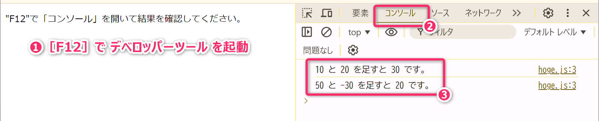
なお、ウェブブラウザで JavaScript を実行するためには HTMLファイル の内部から JavaScriptプログラムを呼び出す必要 があります。
hoge.jsをダブルクリックしたり、ウェブブラウザ画面に「JavaScriptファイル」をドラッグアンドドロップしても動作しません。実際に試してみてください。
注意: ウェブブラウザでは TypeScriptを直接実行できない
ウェブブラウザでは「TypeScript」で書かれたプログラムコードを直接実行することはできません。ウェブブラウザで実行するためには、あらかじめ「TypeScript」を「JavaScript」に変換・配置し、HTMLファイルの内部から呼び出すことが原則となります。
皆さんは、既に「Python」「C」「Arduino」を学んできているので推測はつくと思いますが
hoge.js に記述されるプログラムは、Python で書けば以下のようなものとなります。
Pythonプログラムは、覚えてますよね🤔
3.2 もうひとつの JavaScript の実行環境「Node.js」
先のセクションで「JavaScript はウェブブラウザ上で実行される」と解説しましたが、実は、もうひとつ Node.js という「ウェブブラウザとは異なる JavaScript 実行環境」が存在します。
Node.js (ノード・ジェーエス) は、Windows や Linux などの OS
にインストールして利用する JavaScript 実行環境
となります。Node.jsがインストールされている環境では、先ほどの hoge.js
を次のようにターミナル (＝PowerShell や コマンドプロンプト) から JavaScript
を実行できます。
HTMLの内部から呼び出すことなく直接的に実行できることがポイントです。
PS C:\Users\xxxx\Desktop> node hoge.js
10 と 20 を足すと 30 です。
50 と -30 を足すと 20 です。ウェブブラウザを使えば手軽に実行できる JavaScript を、わざわざ Node.js 環境を構築して、実行するような需要はどこにあるのでしょうか。需要は「大きく2つ」あります (ここから非常にややこしい話になるので注意してください)。
3.2.1 Node.js が求められる理由1
まず、1つは、ウェブアプリの バックエンド (サーバサイド) の実行環境 としての需要があります。既に皆さんは、前期の「知能情報実験実習1」のなかで Flask (Python) を使ってウェブアプリのバックエンド開発を体験していますが、それと同様に、Node.js を使えば JavaScript/TypeScript でもバックエンド開発 ができます。
具体的には Express.js や Koa.js といったフレームワークを利用して JavaScript/TypeScript 言語でバックエンド開発が可能です。そして、そのプログラムの実行環境として Node.js が使われます。
フロントエンドと同じ言語 (JavaScript/TypeScript) でバックエンドも開発できるのは、開発者サイドにとっては大きなメリットですね。
参考
Pythonでは Flask を用いて次のようにウェブアプリ (バックエンド) を構築することができました。
from flask import Flask
app = Flask(__name__)
@app.route('/')
def hello():
return 'hello'
if __name__ == '__main__':
app.run(host='0.0.0.0', port=8000)JavaScriptでは Express.js というフレームワークを使って、次のようにウェブアプリのバックエンドを構築することができます。
このプログラムは、Node.js に加えて Express をインストールした環境で
node app.js というコマンドで実際に実行できます。以下は CommonJS
方式の例なので、後で作る "type": "module"
のプロジェクトで試す場合は、ファイル名を app.cjs として
npm install express の後に node app.cjs
で実行してください。逆に、ウェブブラウザ上では実行できないタイプの
JavaScriptプログラム となっています。
const express = require('express');
const app = express();
const port = 8000;
app.get('/', (req, res) => {
res.send('hello');
});
app.listen(port, () => {
console.log(`Server running at http://localhost:${port}`);
});なお、Pythonで本格的なバックエンド開発をする際には、Flask に加えて Django (ジャンゴ) や FastAPI というフレームワークも選択肢になります。
3.2.2 Node.js が求められる理由2
次に、2つめですが「ウェブブラウザを実行環境として動作するフロントエンドのJavaScriptプログラム」を開発するときに、そのビルド (TypeScript から JavaScript へのトランスパイルを含む) や、開発ツールの実行のために Node.js 環境が使われます。
たとえば「React を用いたフロントエンド開発」が典型的な Node.js の利用シーンとなります。
React は「ウェブブラウザを実行環境として機能するフロントエンド用のJavaScriptライブラリ」ですが、その React を使った JavaScript プログラム を効率的に開発するために Node.js という JavaScript の実行環境 が必要になってきます。ややこしいですよね💦。
大雑把にいえば、Reactを利用したフロントエンドのウェブアプリはウェブブラウザで動作するが、開発中のビルドやツールの利用のために Node.js が必要になる ということです。
なお、現段階で、これらの解説でイメージを掴むことは極めて難しいと思います。これらは、この先の授業のなかで実例を示しながら解説していきます。いますぐ解決したいときは、生成AIを活用してください。
プロンプト例
React はウェブブラウザで動作するフロントエンドのライブラリなのに、その開発に何故 Node.js が必要なのですか？Node.js を使わずに開発はできないのですか？
なお、後半 (第06回講義以降) で登場する「Next.js」は、上記で説明した 2つの Node.js の用途を統合したようなフレームワーク になっています。つまり、Node.js によって「フロントエンド開発の効率化」と「バックエンド機能の提供」を同時に実現し、総合的なフルスタック開発・実行環境を提供しています (ここの部分も現段階で理解する必要はありません)。
3.2.3 定着確認
JavaScript の代表的な実行環境を2つ答えよ。 答え: ウェブブラウザと Node.js
JavaScript と Java は名前が似ているが、別のプログラミング言語である。この説明は「適切」か「不適切」か答えよ。 答え: 適切
ウェブブラウザで JavaScript が動作することの利点として、最も適切なものを選択肢から答えよ。 答え: B
- A. ブラウザがJavaScriptを実行する前に、利用者のPCにNode.jsを自動でインストールしてくれる。
- B. 利用者が対応するブラウザを使えれば、専用の言語実行環境を別途導入せずにアプリを利用できる。
- C. 利用者のPCに開発者と同じnpmパッケージを導入すれば、ブラウザの種類や対応機能を確認せずに使える。
HTMLタグ
<script src="hoge.js"></script>の役割として、最も適切なものを選択肢から答えよ。 答え: A- A. 指定した JavaScript ファイルをブラウザに読み込ませ、実行させる。
- B. 指定した JavaScript ファイルの内容を、コードの文字列としてページ本文に表示する。
- C. 指定した JavaScript ファイルをサーバ側で実行し、その出力だけをブラウザに表示する。
通常のウェブブラウザは、
: numberなどの TypeScript 固有の型注釈を含むコードを、そのまま JavaScript として実行できる。この説明は「適切」か「不適切」か答えよ。 答え: 不適切- 解説: この授業では、TypeScript を JavaScript に変換し、生成した JavaScript をブラウザに読み込ませます。
TypeScript で作ったプログラムを、この授業の方法でブラウザ上で動かす順序として、適切なものを選択肢から答えよ。 答え: C
- A. TypeScript ファイルの拡張子だけを
.jsに変更し、型注釈は残したままHTMLから読み込ませる。 - B. PCにTypeScriptをインストールすれば、型注釈を含む
.tsファイルをHTMLからそのまま読み込ませられる。 - C. TypeScript を JavaScript に変換し、HTMLから生成された JavaScript を読み込ませる。
- A. TypeScript ファイルの拡張子だけを
Node.js の分類として、最も適切なものを選択肢から答えよ。 答え: A
- A. OSにインストールして利用できる、ブラウザとは異なる JavaScript の実行環境
- B. JavaScript に型の情報を追加した、バックエンド専用のプログラミング言語
- C. HTMLを表示し、その画面内で JavaScript を動かすためのウェブブラウザ
Node.js の大きな2つの用途の組合せとして、適切なものを選択肢から答えよ。 答え: B
- A. HTMLをブラウザの画面に表示することと、表示中のページの文字色を直接変更すること
- B. バックエンドのプログラムを実行することと、フロントエンド開発のビルドや開発ツールを実行すること
- C. 開発者のPCでTypeScriptを変換することと、利用者のブラウザ内で画面を直接操作すること
バックエンドを Node.js で開発する利点として、最も適切なものを答えよ。 答え: A
- A. フロントエンドとバックエンドの両方を、JavaScript/TypeScript で開発できる
- B. バックエンドの処理がすべて利用者のブラウザへ移るため、サーバ側の実行環境が不要になる
- C. フロントエンド用に書いたコードを変更せずに使えば、認証やデータ保存の処理も自動的に完成する
バックエンドを含まないフロントエンドだけのアプリでも、そのビルドや開発ツールの実行に Node.js を使うことがある。この説明は「適切」か「不適切」か答えよ。 答え: 適切
- 解説: 「Node.js を使って開発した」という情報だけでは、そのアプリがバックエンドを持つかどうかは判断できません。
4 Node.js のインストール
ここから、TypeScript の基礎学習と、自動テストのための 開発環境 を構築します。Windows PC と VSCode を使用します。このような開発環境の構築も、本授業で身につけてほしいスキルのひとつとなります。
なお、単にテキストに従って作業的・機械的に操作をするのではなく「何のために」「どこに」「どのような設定をするのか」
を考えながら進めてください。最初は詳しく説明しますが、徐々に「プロジェクトのルートで実行」「src
にファイルを作成」のような指示でも、操作ができるようになってほしいと思います。
4.1 授業で使用するバージョン
この授業では Node.js 24 系列 (LTS) と TypeScript 6.0 系列 を使用します。
以下は、2026年9月22日にコマンドで動作確認した組合せです。基本的には、この組合せで環境を構築することを推奨します (この組合せで動作検証してテキストを作成しています)。
| ツール・パッケージ | バージョン | 主な役割 |
|---|---|---|
| Node.js | 24.21.0 | JavaScriptの実行環境 |
| npm | 11.9.0 | パッケージの管理 |
| TypeScript | 6.0.3 | 型チェック、JavaScriptへの変換 |
| @types/node | 24.13.6 | Node.jsのAPIに関する型情報 |
| tsx | 4.23.15 | TypeScriptの変換と実行、変更時の再実行 |
| Vitest | 5.0.1 | 自動テストの実行 |
| Vite | 8.3.0 | Vitestが内部で利用する変換・読み込みの仕組み |
LTS は Long-Term Support の略語で「長期サポート」を意味します。Node.js の「いちばん大きなバージョン番号」と「最新のLTS」は同じとは限らないので注意してください。
- リリースされているバージョンは 公式のリリース一覧 で確認できます。
既に Node.js を PC にインストール済みの場合も、次のコマンドでバージョンを確認してください。20系列、22系列の場合は、24系列をインストールすることを推奨します。
node -v中級者向け: 環境構築について
必要に応じて、他の開発プロジェクトに影響を与えないよう、Docker 等を利用して独立した開発環境を構築してください (環境構築に挑戦してみてください)。また、本教材では npm の利用を前提として説明しています。pnpm などの他のパッケージマネージャを利用している場合は、設定ファイルやコマンドを適宜読み替えてください。
4.2 インストーラのダウンロードと実行
Node.jsの公式ダウンロードページ
(少し下にスクロールした箇所) から 24
系列、Windows、使用するPCのCPUに対応するもの を選択して、Node.js の Windows
用インストーラ (.msi) をダウンロードしてください。一般的な Intel/AMD のPCでは x64
を選択します。
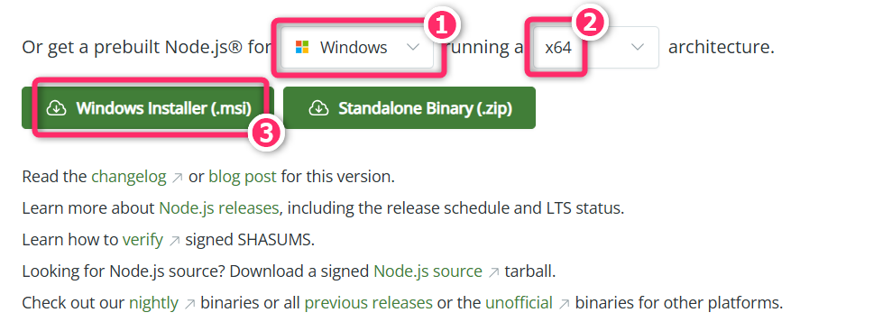
ダウンロードしたインストーラ (node-v24.21.0-x64.msi)
を実行し、基本的には標準の設定で進めてください。インストール後は、開いていた VSCode
や ターミナルを開きなおしてください。
4.3 インストールできたことの確認
PowerShell (≠コマンドプロンプト) で、次のコマンドを ひとつずつ 実行して「Node.js が問題なくインストールできたこと」「Node.js に パス (path) が通っていること」「Node.js と npm のバージョン」などを確認してください。
node -v
npm -v
where.exe nodewhere.exe node は「コマンドとして実行される Node.js
が、どこにあるか」を調べるためのものです。複数のパスが出る場合は、以前の環境やバージョン管理ツールが関係していないか確認します。
なお、原因を確認せずに、既存のツールを次々に削除しないように注意してください。
実行結果の一例は、次のようになります。
PS C:\Users\xxxx> node -v
v24.21.0
PS C:\Users\xxxx> npm -v
11.9.0
PS C:\Users\xxxx> where.exe node
C:\Program Files\nodejs\node.exe以降、環境構築や開発環境の設定でトラブルが発生した場合は、AIだけで何とかしようとせず、詳しい学生や教員に積極的に相談してください。
環境構築のトラブルは、使っているPCやOS、インストール済みのソフトウェア、設定内容などによって原因が大きく異なります。AIに質問しても、現在の状況を正確に説明できなければ、適切な解決策が得られません。
実際の開発 (実業務) でも、分からないことを詳しい人に尋ねながら問題を解決する場面は多くあります。「自分ではここまで試したけれど、ここが分かりません」と説明して助けを求める力も、開発に必要なスキルの一つです。ぜひ普段から、人に質問することにも慣れておいてください。
5 TypeScript の基礎学習のための環境構築
TypeScript プログラムを効率的に作成する環境、作成した TypeScript プログラムを Node.js で実行するための環境を構築・設定していきます。
5.1 プロジェクトフォルダと作業位置
適切な位置 (OneDrive 管理下は絶対にお勧めしません) に
ts-playground というフォルダを作成して、VSCodeで
そのフォルダ自体
を開いてください。次回の講義でも使用するプロジェクトフォルダになります。
VSCode が起動したら、エクスプローラの最上位が ts-playground になっていることを必ず確認してください。
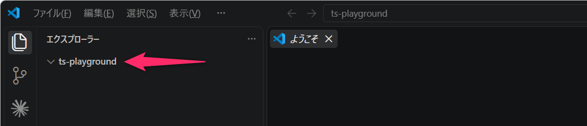
この最上位のフォルダを、以降 プロジェクトのルート と呼びます。以降、特に断りがない限り、コマンドはプロジェクトのルートで実行します。エディタで開いているファイルの場所と、ターミナルの作業位置は同じとは限りません (初心者がよく混乱するところです)。
例えば「src にファイルを作成する」と指示されたら、保存先は
ts-playground/src です。
プロジェクトルートが ts-playground の親フォルダなどになっている場合は、VSCodeを閉じて、再度、ts-playground がプロジェクトルートになるように開き直してください。プロジェクトルートが適切に設定されていないと、以降のテキストの内容はほぼすべて失敗します。
5.2 npm とローカルインストール
npm (Node Package Manager の略) は、JavaScript 関連開発に使用するパッケージ (ライブラリやツール) を管理するものです。Python での pip に近い役割があります。
まず、VSCode で [Ctrl]+[J] でターミナル (PowerShell)
を開き、次のコマンドを実行して、開発の初期設定と、開発に必要な2つのライブラリ (
typescript と @types/node )
をインストールしてください。なお、コマンドは、ひとつずつ実行してください (以下、同様)。
npm init -y
npm i -D --save-exact typescript@6.0.3 @types/node@24.13.6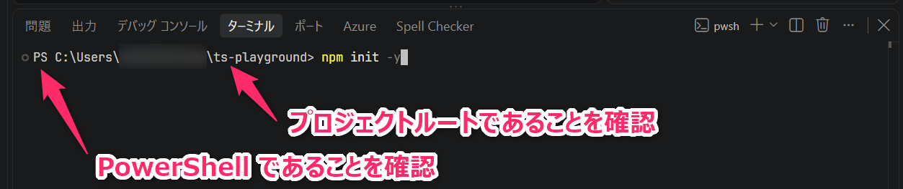
コマンドの概要は以下のとおりです。
npm init -y: プロジェクトの情報を記録するpackage.jsonを、標準的な内容で作成します。npm i -D --save-exact ...: 指定したバージョンのライブラリ (パッケージ) を 「現在のプロジェクト」にローカルインストール します。iは、installの略表記です。-Dは--save-devの略表記で、開発用のライブラリとしてインストールするための指示です。--save-exact: は、package.jsonにバージョンの範囲ではなく、インストールしたバージョンそのものを記録するための指示です。
Node.js 関連のライブラリ (パッケージ) は、PC 全体から利用できる「グローバル環境」もしくは、特定のプロジェクトだけで利用する「ローカル環境」を指示してインストールします。
通常は、プロジェクトごとに使用するライブラリやそのバージョンを管理するため、ローカルにインストールするのが基本です。グローバルにインストールする必要がある場合は、-g
オプションを付けて実行します。
プロンプト例
TypeScript の実行開発環境を構築しているのですが、
npm init -yというコマンドは、なんのために実行するのですか？また、実行すると、プロジェクトフォルダにどのような影響を与えますか？
TypeScript の実行開発環境を構築しているのですが、
npm i -D --save-exact typescript@6.0.3 @types/node@24.13.6というコマンドは、なんのために実行するのですか？また、実行すると、プロジェクトフォルダにどのような影響を与えますか？
Node.js 関連のライブラリ (パッケージ) は、「グローバル環境」もしくは「ローカル環境」にインストールできると聞きました。どういうことですか？さっぱり意味が分かりません。
5.2.1 確認
以上の操作で、プロジェクトフォルダのなかに package.json と package-lock.json という2つのファイルと、node_modules というフォルダが作成されているはずです。確認してください。
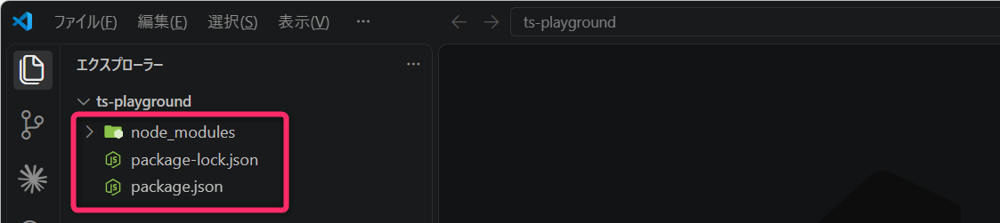
基本的に、package-lock.json と node_modules については、手作業で直接編集したり操作したりすることはありません。一方で、package.json は、今後、直接編集するファイルとなります。
5.2.2 定着確認
npm の主な役割として、最も適切なものを選択肢から答えよ。 答え: C
- A. JavaScript のコードをブラウザの代わりに実行し、計算結果を表示する
- B. TypeScript の型を検査し、JavaScript のソースコードへ変換する
- C. 開発に使うライブラリやツールなどのパッケージを導入・管理する
npm init -yを実行する主な目的として、適切なものを選択肢から答えよ。 答え: A- A. プロジェクトの情報を記録する
package.jsonを、標準的な内容で作成する - B. 既存の
package.jsonに記録されたパッケージを読み取り、node_modulesに導入する - C. TypeScriptの変換設定を記録する
tsconfig.jsonを、標準的な内容で作成する
- A. プロジェクトの情報を記録する
npm init -yを実行してpackage.jsonができれば、続くインストールコマンドを実行しなくても TypeScript の導入は完了している。この説明は「適切」か「不適切」か答えよ。 答え: 不適切- 解説: プロジェクトの初期設定と、必要なパッケージの導入は別の操作です。
npm iのiを、省略せずに書いたサブコマンド名を答えよ。 答え:installインストールコマンドの
-Dの意味として、適切なものを選択肢から答えよ。 答え: B- A. PC全体で共通して利用するため、グローバル環境へインストールする
- B. このプロジェクトの開発用の依存パッケージとして記録し、インストールする
- C. 通常の依存パッケージとして
dependenciesに記録し、開発時以外にも必要なものとして扱う
--save-exactの役割として、最も適切なものを選択肢から答えよ。 答え: C- A.
package.jsonには更新可能な範囲を記録し、package-lock.jsonにだけ正確なバージョンを記録する - B. 指定したバージョンを現在のプロジェクトだけでなく、グローバル環境にもそろえて記録する
- C.
package.jsonに、バージョンの範囲ではなく指定したバージョンそのものを記録する - 解説: 例えば
typescriptのバージョンを6.0.3と記録します。どのバージョンを使うプロジェクトなのかを明確にするための指定です。
- A.
あるプロジェクトに TypeScript をローカルインストールすると、同じPCにある別のすべてのプロジェクトにも、自動的に同じバージョンが導入される。この説明は「適切」か「不適切」か答えよ。 答え: 不適切
- 解説: ローカルインストールはプロジェクト単位です。別のプロジェクトで必要なパッケージは、そのプロジェクトで管理します。
次のうち、ファイルではなくフォルダの名前を選択肢から答えよ。 答え: C
- A.
package.json - B.
package-lock.json - C.
node_modules
- A.
5.3 package.json の設定
package.json は、Node.js（npm）を用いた開発において、プロジェクト全体の情報や、使用するライブラリ・実行コマンドを管理するための設定ファイルになります。
package.json を、次の内容に書き換えてください。今回は必要最小限の構成としています。
{
"name": "ts-playground",
"version": "1.0.0",
"private": true,
"type": "module",
"devDependencies": {
"@types/node": "24.13.6",
"typescript": "6.0.3"
}
}特に覚えていて欲しい重要な設定項目の意味は次の通りです。
"private": trueは、このプロジェクトを 誤って npm のパッケージとして公開しないようにするための設定 です。セキュリティに関わる設定です。なお GitHub における公開・非公開の設定とは関係ありません。"type": "module"は、モジュール方式 (＝JavaScript のプログラムを複数のファイルに分けて、それらをどうやって読み込んだり、機能を外に公開したりするかのルール) を指定するものです。モジュール方式としては、従来からの CommonJS と、比較的に新しい ES Modules の2系統があり、ここではモダンな ES Modules を採用するため、"module"を指定しています。- ES Modules (比較的に新しい方式):
import/exportの文を使用 - CommonJS (従来からの方式):
require/module.exportsの文を使用
- ES Modules (比較的に新しい方式):
"devDependencies"には、このプロジェクトの開発が依存しているライブラリ が記載されています。ここでいう「依存」とは そのライブラリがないと開発作業を正常に進められない、または必要な機能を利用できない という意味です。
プロンプト例
JavaScript には、2系統のモジュール方式 (CommonJS、ES Modules) があると聞きました。それぞれについて、初心者が陥りやすい罠に触れながら解説してください。
5.3.1 設定の確認
ここまでの操作でプロジェクトフォルダにローカルインストールされた TypeScript のバージョンや設定などについて確認していきます。VSCode のターミナルから各コマンドを実行してください。
npx tsc --version
npm list --depth=0Version 6.0.3
が表示されることと、2つのパッケージが指定したバージョンで入っていることを確認してください。npx tsc
は、このプロジェクトにローカルインストールした TypeScript
の各種コマンドを呼び出すために使用します。
実行結果の一例を以下に示します。
PS C:\Users\xxxx\ts-playground> npx tsc --version
Version 6.0.3
PS C:\Users\xxxx\ts-playground> npm list --depth=0
ts-playground@1.0.0 C:\Users\xxxx\ts-playground
├── @types/node@24.13.6
└── typescript@6.0.3プロンプト例
npm list --depth=0というコマンドの意味を初心者向けに解説してください。
5.3.2 定着確認
Node.js (npm) を用いた開発において、プロジェクトの名前やモジュール方式、依存するパッケージ (ライブラリ) などの設定を記述するファイルの名前を答えよ。 答え:
package.jsonpackage.json において
"private": trueと設定すれば、GitHub の公開リポジトリに置いたソースコードも非公開になる。この説明は「適切」か「不適切」か答えよ。 答え: 不適切- 解説: npmへの公開を制限する設定と、GitHub上の公開・非公開の設定は別です。
JavaScriptにおける「モジュール方式」の説明として、最も適切なものを選択肢から答えよ。 答え: A
- A. プログラムを複数のファイルに分割し、ファイル間で機能を読み込んだり、他のファイルから利用できるように公開したりするための仕組み
- B. ソースコードを GitHub で公開する際に、閲覧や編集ができるユーザーを決めるための仕組み
- C. 開発に使用するパッケージを、PC全体または特定のプロジェクトのどちらにインストールするかを決めるための仕組み
「開発があるパッケージに依存している」の意味として、最も適切なものを選択肢から答えよ。 答え: A
- A. 開発作業にそのパッケージの機能を必要としており、導入されていないと型チェックなどの必要な作業を行えない
- B. 開発作業にそのパッケージの機能を必要としているので、完成したアプリの利用者にも必ず同じパッケージの導入が必要になる
- C. パッケージ名を
package.jsonに記録しておけば、本体をインストールしなくても、その機能を使用できる
5.4 TypeScript の設定
VSCode のターミナルから以下のコマンドを実行して TypeScript の設定に関する雛形ファイルを作成します。
npx tsc --initこのコマンドにより、tsconfig.json がプロジェクトルートに生成されたはずです。tsconfig.json は「TypeScriptの型チェックや、JavaScriptへの変換方法を設定するためのファイル」になります。
ここでは、以下の内容に置き換えて保存してください。
{
"compilerOptions": {
"target": "ES2023",
"lib": ["ES2023"],
"module": "NodeNext",
"moduleDetection": "force",
"rootDir": "./src",
"outDir": "./dist",
"types": ["node"],
"strict": true,
"noUncheckedIndexedAccess": true,
"exactOptionalPropertyTypes": true,
"verbatimModuleSyntax": true,
"noEmitOnError": true,
"sourceMap": true,
"skipLibCheck": true
},
"include": ["src/**/*.ts"]
}多数の項目がありますが、現段階で全項目の意味を理解する必要はありません。現段階で理解してほしい項目は、次のとおりです。
rootDir: ソースファイルの配置の基準をsrcにします。outDir: 生成した JavaScript をdistに出力します。- 例えば
src/foo/bar.tsはdist/foo/bar.jsになります。distは distribution の略称で、生成物の置き場所としてよく使用される名前です。
- 例えば
include: どのファイルをTypeScriptのコンパイル対象にするかを指定します。今回はsrc内のすべての.tsファイルを対象にします。**はサブフォルダも対象とする指定です。
types: Node.js で使う機能の型情報を読み込むように指定します。これにより、TypeScriptが process や fs などの Node.js 固有の機能 (ウェブブラウザ実行環境ではサポートされない機能) を正しく認識し、入力補完や型チェックを行えるようになります。strict: 厳密な型チェックを有効にします。noEmitOnError: 型などにエラーがあるとき、新しいJSファイルを出力しないようにする設定です。
ただし、noEmitOnError は
以前に生成したJSを削除する設定ではありません。変換に失敗しても古い
dist/prac00.js
が残っていれば、それを実行できてしまいます。「実行できた」だけで判断せず、変換が成功したことも確認してください。
つづいて、上記の設定にあわせてプロジェクトルートに src
というフォルダを作成してください。なお、dist
フォルダはトランスパイルの際に自動作成されます。
現時点では、次のようなファイル構成となっているはずです。
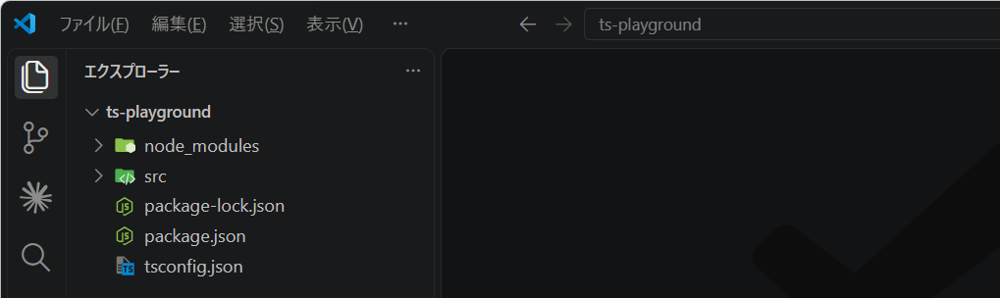
5.5 TSファイルの作成と、JSファイルへの変換・実行
src に prac00.ts を作成し、次の TypeScript プログラム を記述
(コピペ) して保存してください。
function greetAndCalculate(name: string, a: number, b: number): string {
const sum: number = a + b;
return `Hello, ${name}! The sum of ${a} and ${b} is ${sum}.`;
}
const userName: string = "Alice";
const x: number = 10;
const y: number = 20;
const result: string = greetAndCalculate(userName, x, y);
console.log(result);VSCode のターミナルから次のコマンドを実行してください。これにより、tsconfig.json の include で指定したファイルが TypeScript から JavaScript に変換されて、dist フォルダに出力されます。
npx tscnpx tscは、TypeScriptのコンパイラを実行するコマンドです。npx: npm パッケージのコマンドを実行するための仕組みです。インストール済みのものを実行できるほか、必要に応じて一時的に取得して実行することもあります。- パッケージをインストール・管理する
npmコマンドと混同しないようにしてください。
- パッケージをインストール・管理する
tsc: TypeScript Compiler の略で、TypeScriptをJavaScriptに変換するコンパイラです。
トランスパイルによって生成された JavaScript プログラムファイル
dist/prac00.js を開き、元の TypeScript プログラムと比較してください。特に
: number などの 型の注釈がどうなったか を確認してください。
なお、.js.map は元のソースとの対応情報です。
つづいて、生成された JavaScript プログラムを 次のコマンドで実行します。
node dist/prac00.js次のような実行結果が出力されるはずです。
Hello, Alice! The sum of 10 and 20 is 30.- 変換するコマンド (
npx tsc) と 実行するコマンド (node dist/xxxx.js) は別です。
5.5.1 定着確認
TypeScript の型チェックや JavaScript への変換方法を指定する設定ファイルの名前を答えよ。 答え:
tsconfig.jsondistは、どのような英単語に由来するフォルダ名か答えよ。 答え: distributionプロジェクトのルートで、設定に従って TypeScript を JavaScript に変換するコマンドを答えよ。 答え:
npx tsctscは何の略か、英語で答えよ。 答え: TypeScript Compiler本文で説明した
npmとnpxの役割の違いとして、適切なものを選択肢から答えよ。 答え: A- A.
npmはパッケージの導入・管理などに使い、npxはパッケージが提供するコマンドの実行に使う - B.
npmはパッケージの導入・管理に使い、npxはコマンドを実行する前に毎回そのパッケージを最新版へ更新する - C.
npmはパッケージの導入・管理に使い、npxはローカルのパッケージを無視してグローバルのコマンドだけを実行する
- A.
npxは、インストール済みのパッケージだけでなく、必要に応じてパッケージを一時的に取得してコマンドを実行することもある。この説明は「適切」か「不適切」か答えよ。 答え: 適切npx tscによって生成された.js.mapファイルの役割として、適切なものを選択肢から答えよ。 答え: B- A. 変換前に判定した型の情報を保持し、Node.jsが実行時に値の型を検査するために使う
- B. 生成したJavaScriptと元のソースコードとの対応情報を保持する
- C. 元のTypeScriptの変更を検知し、生成済みのJavaScriptを自動更新するために使う
dist/prac00.jsを Node.js で実行するためのコマンドを答えよ。 答え:node dist/prac00.jsnpx tscが正常に完了すると、変換されたプログラムも自動で実行され、その結果が表示される。この説明は「適切」か「不適切」か答えよ。 答え: 不適切- 解説: 変換と実行は別の操作です。生成されたプログラムは、次の
node dist/prac00.jsで実行します。
- 解説: 変換と実行は別の操作です。生成されたプログラムは、次の
既存の TypeScript ファイルを編集・保存したあと、その変更を反映したプログラムを実行する手順として、本授業の環境において最も適切なものを選択肢から答えよ。 答え: C
- A.
node dist/prac00.jsを実行してからnpx tscを実行すれば、最初の実行結果に変更が反映される - B.
node dist/prac00.jsを実行するだけで、元のTypeScriptの変更も自動的に変換される - C.
npx tscによる変換が成功したことを確認してから、node dist/prac00.jsを実行する
- A.
5.5.2 演習
- src/prac00.ts は基本的な TypeScript
プログラムです。読解して文法などを学んでください。
- 皆さんは、既に Python、C言語を学習しているので、比較的簡単に理解することができると思います。不明な文法があれば、生成AIを活用して解決してください。
- src/prac00.ts の
xを11に変更して保存してください。そのままnode dist/prac00.jsを実行して、実行結果が変わるか確認してください。 - つづいて、
npx tsc、node dist/prac00.jsの順に実行して、実行結果が変わることを確認してください。確認後はxを10に戻し、再度コンパイルしてください。
5.6 VSCodeで使用するTypeScriptをそろえる
VSCodeにはTypeScriptの編集機能がありますが、エディタで診断に使うTypeScriptと、ターミナルから呼ぶTypeScriptは別々に選択されることがあります。同じコードについて結果が食い違わないように設定します。
少し分かりにくいところですが、ここまでに npm
でTypeScriptをインストールしただけでは、VSCodeの編集機能まで、その TypeScript
に切り替わっているわけではありません
(環境によってはたまたま同じになっている場合がありますが・・・)。
| TypeScriptを使う場面 | 使用されるもの |
|---|---|
| ターミナルで npx tsc を実行する | このプロジェクトにインストールしたTypeScript 6.0.3 |
| VSCodeでコードを編集し、補完候補や赤い波線を表示する | VSCodeの編集機能で選択されているTypeScript。標準ではVSCodeに付属する版 |
バージョンが異なると、例えば 「ターミナルでは型チェックに通るのに、エディタでは赤い波線が出る」、あるいはその逆が起こる場合があります。利用できる構文や設定項目、型の判定がバージョンによって変わるためです。
未設定なら必ずエラーになるわけではありません。簡単なコードでは違いが出ず、気づかないこともあります。ここでは、編集時とコマンド実行時で 同じバージョンのTypeScriptを使い、診断の基準をそろえる ために設定します。
ルートに .vscode フォルダを作成し、そのなかに settings.json
を新規作成して、以下を記述して保存してください (ファイル名を setting.json
と間違わないようにしてください)。
{
"js/ts.tsdk.path": "./node_modules/typescript/lib",
"js/ts.tsdk.promptToUseWorkspaceVersion": true
}js/ts.tsdk.path は
使用したいTypeScriptの場所、js/ts.tsdk.promptToUseWorkspaceVersion
は そのワークスペース版を使うか確認する案内を有効にする設定です。後者の
true 自体が「ワークスペース版を選択済み」という意味ではありません。
先に settings.json から src/prac00.ts
のタブへ切り替え、コード部分をクリックしてください。JSONファイルを開いたままでは、次のTypeScript用コマンドは表示されません。
src/prac00.ts を開いた状態 で [Ctrl]+[Shift]+[P] から
「TypeScript: Select TypeScript Version」(TypeScriptのバージョンを選択)
を入力・実行し、「Use Workspace Version」(ワークスペースのバージョンを使用)
を選択してください。
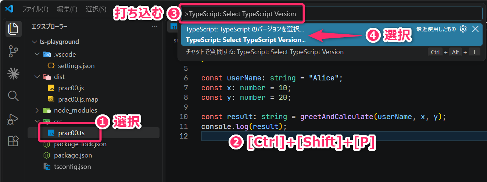
5.6.1 適切に設定できたことの確認
次の2点について確認してください。
- プロジェクトのルートのターミナルで
npx tsc --versionを実行し、Version 6.0.3と表示されることを確認します。これはコマンド側の確認です。 prac00.tsを開き、もう一度 「TypeScript: Select TypeScript Version」 を開きます。現在選択されている項目には 先頭に丸印 (•) が付きます。丸印が付いた 「Use Workspace Version」 のバージョンが 6.0.3、場所がプロジェクト内のnode_modules/typescript/libであることを確認してください。
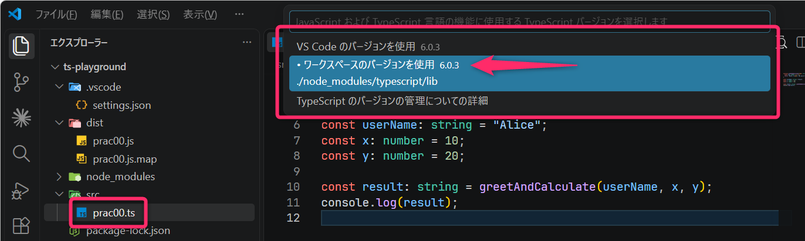
6 開発を効率的に行なうための設定
6.1 tsx と Vitest の追加
VSCode のターミナルから、次のコマンドを実行して、tsx と vitest というライブラリをインストールしてください。
npm i -D --save-exact tsx@4.23.15 vitest@5.0.1 vite@8.3.0- tsx は、TypeScriptの「変換」と「実行」をまとめて行なうためのツールです。ただし、型チェックは行われないことに注意してください。
- Vitest は、期待したとおりにプログラムが動くかを、自動的に確認するためのツールです (TypeScriptのテスト駆動開発の定石ツールです)。
ソフトウェアテストは、開発の現場でも日常的な仕事です
実際の開発では、新機能を作るだけでなく、「この機能のテストを作って」「この不具合が再発したら検出できるテストを追加して」 と依頼されることがあります。新人のうちから、既存のテストを実行したり、仕様を読んで確認項目を考えたり、小さなテストを追加したりする仕事を任されることもあります。テストは、開発者にとっても身につけておくべき基本スキルです。
画面を操作して確認するテストもありますが、今回学ぶのは 確認する処理をコードにして、繰り返し実行できる「自動テスト」 です。一度動いた機能でも、その後の修正で壊れることがあります。テストを残しておくと、変更後も、以前できていたことができるか を確認しやすくなります。このような確認を 回帰テスト と呼びます。
例えば、GitHub Actionsでは、コードの変更を共有したときにテストを自動実行する仕組みも作れます。まずは自分のPCで テストを書き、実行し、失敗の理由を読む ところから経験しておきましょう。
package.json の scripts の項目を次のように書き換えてください (追加時に、末尾のカンマの付け忘れに注意)。
"scripts": {
"dev": "tsx watch",
"build": "tsc",
"typecheck": "tsc --noEmit",
"test": "vitest",
"test:run": "vitest run"
},これにより、package.json 全体は次のようになるはずです。
{
"name": "ts-playground",
"version": "1.0.0",
"private": true,
"type": "module",
"scripts": {
"dev": "tsx watch",
"build": "tsc",
"typecheck": "tsc --noEmit",
"test": "vitest",
"test:run": "vitest run"
},
"devDependencies": {
"@types/node": "24.13.6",
"tsx": "4.23.15",
"typescript": "6.0.3",
"vite": "8.3.0",
"vitest": "5.0.1"
}
}package.json において、scripts
は、よく使うコマンドに名前を付けるための項目です。例えば npm run build
というコマンドで npx tsc を実行できるようになります。
npm
のスクリプト内では、ローカルに導入したコマンドを使用できるので、package.json
の scripts の項目内で npx の記載は不要です。
| 操作 | コマンド | 実行される内容 |
|---|---|---|
| TSの実行 | npm run dev src/prac00.ts | 変更を監視し、TS を実行 |
| コンパイル | npm run build | 型などを確認し、dist に JS を出力 |
| 型チェック | npm run typecheck | 型などを確認。JS は出力しない |
| 自動テスト | npm run test:run | テストを1回実行し、結果を表示して終了 |
| テストの監視実行 | npm run test | 変更を監視し、テストを再実行 |
プロンプト例
npm list --depth=0というコマンドの意味を初心者向けに解説してください。
6.2 TypeScript の型チェックと実行
次のコマンドを実行し、先ほどと同じ結果になることを確認してください。
npm run typecheck
npm run dev src/prac00.tsnpm run dev src/prac00.ts (実体は tsx watch
src/prac00.ts) は、継続的に src/prac00.ts
をチェックして、ファイルが変更されると自動的に再実行されます。ファイルの監視を停止する場合は、ターミナルで
[Ctrl]+[C] を実行します。
6.2.1 定着確認
TypeScript の変換と実行をまとめて行うための、ツールの名称を答えよ。 答え: tsx
tsx の役割として、最も適切なものを選択肢から答えよ。 答え: B
- A. 型チェックに合格したプログラムだけを実行し、型エラーのあるプログラムは必ず停止する
- B. TypeScript の変換と実行を行うが、TypeScript の型チェックは行わない
- C. TypeScript の型チェックだけを行い、プログラムの実行は別のツールに任せる
期待したとおりにプログラムが動くかを自動で確認するために、本授業で導入したツールの名称を答えよ。 答え: Vitest
package.json の scripts の項目で
"build": "tsc"と登録したコマンドを、npm経由で実行するためのコマンドを答えよ。 答え:npm run buildpackage.json の scripts の項目で
"dev": "tsx watch"と登録したとき、npm run dev src/prac00.tsが起動する処理として、適切なものを選択肢から答えよ。 答え: A- A.
tsx watch src/prac00.ts - B.
tsc --noEmit src/prac00.ts - C.
node dist/prac00.js
- A.
tsx watchによる「監視」の意味として、適切なものを選択肢から答えよ。 答え: B- A. 対象ファイルの変更を監視し、型チェックに合格した場合だけプログラムを再実行すること
- B. 対象ファイルなどの変更を監視し、保存による変更を検出するとプログラムを再実行すること
- C. 実行結果を監視し、期待した答えと異なっていた場合にテスト失敗として報告すること
npm run dev src/prac00.tsの監視実行を停止するとき、ターミナルで使うキー操作を答えよ。 答え:Ctrl+Ctsx でプログラムが実行できたことは、TypeScript の型チェックにも合格した証拠になる。この説明は「適切」か「不適切」か答えよ。 答え: 不適切
- 解説: tsx は型チェックを行いません。実行できたことと、型の整合性が確認できたことは別です。
npm run typecheckとnpm run dev src/prac00.tsを分けて実行する理由として、最も適切なものを選択肢から答えよ。 答え: A- A. 型の整合性を確認する作業と、プログラムを実際に動かして結果を確認する作業の両方が必要だから
- B. 型チェックで生成された
dist内のJavaScriptを、tsxが読み込んで実行する仕組みだから - C. 最初に型チェックを一度通しておけば、その後の変更もtsxが同じ基準で型チェックしてくれるから
6.2.2 演習
- npm run dev src/prac00.ts の動作確認をしてください。確認後、ターミナルで
[Ctrl]+[C]を実行して停止してください。 - src/prac00.ts の 第07行目 の
const x: number = 10;をconst x: number = "10";に書き換えてください。- npm run typecheck で型エラーが検出されることを確認してください。
- npm run dev src/prac00.ts で、問題なく実行できることを確認してください。
- ただし、実行できることと、計算結果が意図どおりであることは別です。合計は
30と1020のどちらになったでしょうか。文字列の"10"と数値の20に+を使うと、ここでは文字列の連結になり1020となります。: numberと書いても、実行時に"10"が数値の10へ自動変換されるわけではありません。
- 確認後は
[Ctrl]+[C]で監視実行を停止し、const x: number = 10;に戻して保存してください。npm run typecheckで型エラーがなくなったことを確認してから、先へ進んでください。
6.3 VSCode から現在のTSファイルを実行
.vscode/tasks.json
を次の内容で作成してください。ターミナルでの実行方法を確認してから、ショートカットも使えるようにします。
{
"version": "2.0.0",
"tasks": [
{
"label": "Run Current TypeScript File",
"type": "shell",
"command": "npx.cmd",
"args": ["tsx", "${file}"],
"options": {
"cwd": "${workspaceFolder}"
},
"group": {
"kind": "build",
"isDefault": true
},
"presentation": {
"reveal": "always",
"panel": "dedicated",
"echo": true
},
"problemMatcher": []
}
]
}src/prac00.ts を開いて 保存してから
[Ctrl]+[Shift]+[B]
を押してください。今回はビルド用のショートカットに、tsxによる実行を割り当てています。型チェックや
dist への出力は行ないません。
${file} は開いているファイルのパス、${workspaceFolder}
はプロジェクトのルートです。JSONなど別のファイルを開いていると、そのファイルが実行対象になってしまうので注意してください。
6.4 Vitest と VSCode 拡張機能の動作確認
まずは、テストツールが動く環境になっていることを確認します。テストを使って設計・実装を進める練習は、その後に行ないます。
プロジェクトルートに vitest.config.js を新規作成してください。これはVitest専用の設定ファイルで、今回はJavaScriptで記述します。
import { defineConfig } from "vitest/config";
export default defineConfig({
test: {
include: ["src/**/*.test.ts"],
environment: "node",
},
});include で src 内の .test.ts
だけをテスト対象 にします。environment
はテストするコードをNode.jsの環境で動かすための指定です。
src に prac00.test.ts を作成してください。
test はテストの名前と処理を登録し、expect(...).toBe(...) は 実際の値が、期待した値と一致するか を確認します。import や
() => { ... }
の詳しい構文は後で学びますが、ここでは「テスト名」「実際の値」「期待値」がどれかを確認してください。
expect(10 + 20) の内側が
実際に計算する式、.toBe(30) の 30 が
期待値 です。期待値は「今のコードを動かしたら何が出たか」ではなく、仕様として、どう動いてほしいか
から決めます。この例はツールの動作確認用なので足し算を直接書いています。後半では、自分で作った関数の戻り値を検査します。
また、型チェックとテストの役割は異なります。例えば、足し算をするはずの処理を引き算にしても、数値どうしの計算なので型エラーにはなりません。型の整合性はTypeScriptで、選んだ条件での動作はテストで確認します。
テストを実行するためにターミナルから、次の2つを実行してください。
npm run typecheck
npm run test:run型チェックでエラーがなく、テスト結果に 1つのファイル・1つのテストの成功
が表示されれば、コマンド側の準備はできています。Vitestは .test.ts
などをテストとして検出します。今回はテストも src
に置くので、TypeScriptの型チェックの対象にもなります。
PS C:\Users\xxxx\ts-playground> npm run test:run
> ts-playground@1.0.0 test:run
> vitest run
RUN v5.0.1 C:/Users/xxxx/ts-playground
✓ src/prac00.test.ts (1 test) 4ms
✓ 10と20の合計が30になる 2ms
Test Files 1 passed (1)
Tests 1 passed (1)
Start at 16:14:54
Duration 352ms (transform 51%, import 34%, worker 9%, tests 56.4.1 VSCode の拡張機能を利用
つづいて、VSCodeの拡張機能から Vitest (識別子:
vitest.explorer) をインストールしてください。
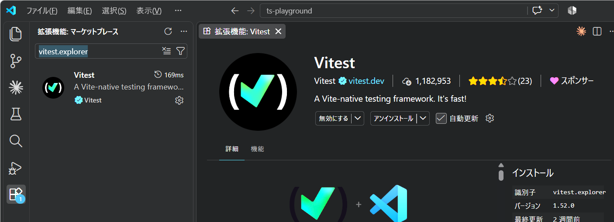
なお、npm コマンドでインストールした Vitest 本体と、VSCode の拡張機能は別物です。VSCode の拡張機能だけを入れても、このプロジェクトに Vitest 本体が導入されるわけではないので注意してください。
- VSCode の左側に並ぶフラスコ型のアイコンをクリックして テスト (Testing)
ビューを開いてください。
- もし、フラスコ型のアイコンが見当たらないときは、
[Ctrl]+[Shift]+[P]でコマンドパレットを開いてDeveloper: Reload Windowを実行してください。
- もし、フラスコ型のアイコンが見当たらないときは、
prac00.test.tsと、その中のテストが表示されることを確認してください。表示されない場合はテストの更新 (Refresh Tests) を試してください。- テスト横の実行ボタンから実行し、成功することを確認してください。
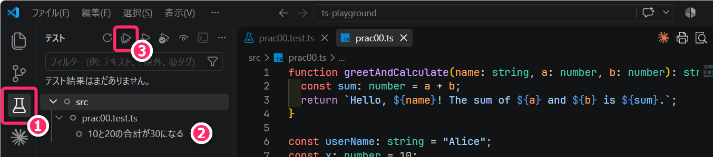
- 期待値だけを
30から31に変えて保存し、再実行してください。失敗になり、期待値と実際の値の違いを確認できることを確かめます。
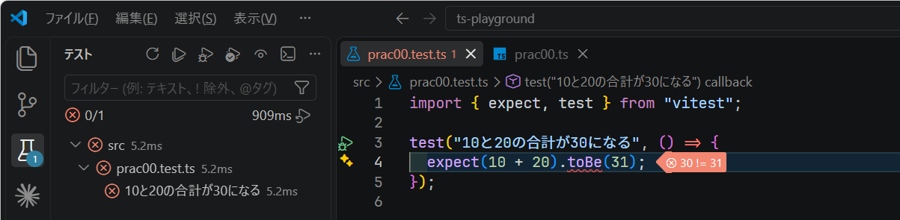
30に戻して保存し、再実行して成功に戻してください。
意図的に失敗させるのは、間違いがある場合に、実際にテストが知らせてくれることまで確認するためです。期待値を変えて失敗を作る操作は、ここではツールの動作確認のために行なっています。普段の開発で、テストを通すためだけに期待値を都合よく変えてはいけません。
6.4.2 定着確認
expect(10 + 20).toBe(30)の30は何を表すか。最も適切なものを選択肢から答えよ。 答え: B- A. テストツールが実行結果を読み取り、自動的に記録した値
- B. この計算で得られるべき結果として、テストを書く側が指定した値
- C. 計算結果が異なっていた場合に、テストツールが結果を置き換えるための値
- 「10と20を足す」という仕様に対し、
expect(10 - 20).toBe(30)が失敗した。対応として、最も適切なものを選択肢から答えよ。 答え: C- A. 実際の値は
-10なので、期待値を-10に変更してテストを成功させる - B. 型チェックが成功していれば計算も正しいので、このテストを削除する
- C. 仕様と式を照合し、引き算になっている箇所を足し算に直して再実行する
- A. 実際の値は
- 一度成功したテストを、コードの修正後にも繰り返し実行する目的として、最も適切なものを選択肢から答えよ。
答え: A
- A. 以前できていた処理が、今回の変更によって壊れていないか確認するため
- B. 期待値を修正後の実行結果に合わせて更新し、仕様の変更を自動承認するため
- C. 既存のテストが成功すれば、新機能についての確認は不要になるため
6.5 環境構築の完了確認
次の状態になっているか確認してください。node_modules と dist
の内部は一部を省略しています。
ts-playground/
├─ .vscode/
│ ├─ settings.json
│ └─ tasks.json
├─ src/
│ ├─ prac00.ts
│ └─ prac00.test.ts
├─ dist/ 👈 ビルドで生成
├─ node_modules/ 👈 npmで導入
├─ package.json
├─ package-lock.json
├─ tsconfig.json
└─ vitest.config.jsnpx tsc --versionと、VSCodeが使うTypeScriptが、どちらも 6.0.3。npm run typecheckとnpm run buildが成功する。node dist/prac00.js、npx tsx src/prac00.ts、prac00.tsがアクティブな状態で VSCode のショートカット ([Ctrl]+[Shift]+[B]) で、同じ結果が得られる。npm run test:runと VSCode の拡張機能によるテストで、それぞれ成功する。- 各種設定ファイルや TypeScript ファイルに警告の赤い波線などが表示されていない。
6.6 練習
コンソールに Hi, Bob! と出力するプログラムを
src/prac00a.ts に作成し、実行してください。変数に
Bob を代入して console.log()
で文字列を組み立てればOKです。ファイル作成から実行までの操作を、自分で判断して取り組んでください。
- 解答例はこちら。
6.6.1 定着確認
- LTSとは何の略語か、英語で答えよ。
- 答え: Long-Term Support
- Node.jsのバージョンを確認するコマンドを答えよ。
- 答え:
node -v
- 答え:
dist/prac00.jsをNode.jsで実行するコマンドを答えよ。作業位置はプロジェクトのルートとする。- 答え:
node dist/prac00.js
- 答え:
- パッケージの管理に使用するツールの名前を答えよ。
- 答え: npm
npm installに-gを付けない場合、通常はローカルとグローバルのどちらにインストールされるか。- 答え: ローカル
- ローカルに導入したパッケージの本体が入るフォルダ名を答えよ。
- 答え:
node_modules
- 答え:
- パッケージの依存関係を記録する2つのファイル名を答えよ。
- 答え:
package.jsonとpackage-lock.json
- 答え:
npm runで実行するコマンドを登録するファイルと、その項目名を答えよ。- 答え:
package.jsonのscripts
- 答え:
- TypeScriptのコンパイル設定を記述するファイル名と、この資料の設定を使ってJSを生成するコマンドを答えよ。
- 答え:
tsconfig.json、npx tsc(またはnpm run build)
- 答え:
- ローカルに導入済みのtsxで
src/hoge.tsを実行するコマンドを答えよ。- 答え:
npx tsx src/hoge.ts
- 答え:
src/hoge.tsの保存ごとに再実行するコマンドを答えよ。- 答え:
npx tsx watch src/hoge.ts
- 答え:
- 「tsxで実行できれば、型チェックも成功している」。この説明は適切か、不適切か。
- 答え: 不適切
- 解説: tsx自身は型チェックを行なわない。
npm run typecheckでも確認する。
- 「VitestのVSCode拡張を入れたので、プロジェクトにVitest本体を入れる必要はない」。この説明は適切か、不適切か。
- 答え: 不適切
- 解説: VSCode拡張は操作するための窓口であり、プロジェクトにはnpmでVitest本体を導入する。
7 Git/GitHub管理
ここまで作成してきたプロジェクトフォルダについてGit管理を有効化し、さらに GitHub に公開していきます。Git / GitHub 基本設定は既に完了しているものとします。未設定の場合は PG1の講義資料 を参照して設定してください。
7.1 .gitignore の設定
プロジェクトフォルダのトップ階層に .gitignore を作成して
node_modules フォルダを Gitの管理対象外
に設定します。node_modules には (パッケージのインストール状況によっては)
何千ものファイルが含まれるため、必ず .gitignore に含めるようにしてください。
以下のように .gitignore を作成して保存してください。
dist は再生成できるビルド結果、.vitest
はテスト関連の生成物の保存先として使われることがあるため、これらも管理対象外にします。一方、package.json、package-lock.json、設定ファイル、src
のコードとテストはGitで管理してください。
現状のプロジェクトフォルダの構成は、前の「環境構築の完了確認」と照合してください。
以下の手順で、このプロジェクトフォルダを GitHub に Public なリポジトリとして発行してください。
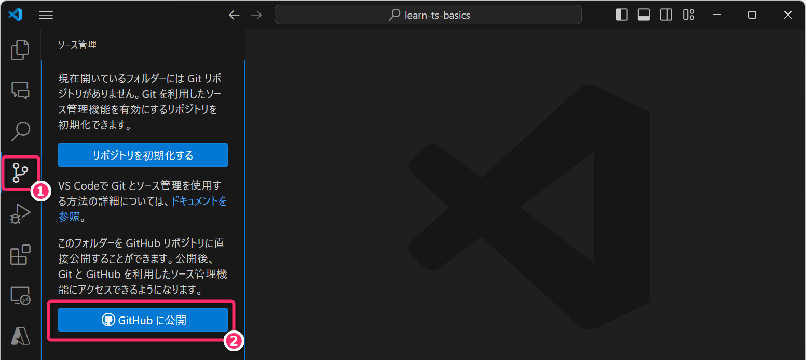
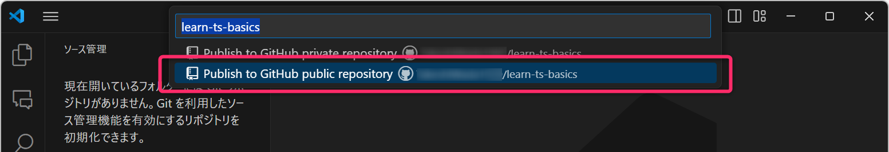
問題なく発行できれば、以下のようにウェブブラウザからリポジトリが確認できるハズです。あとは、定期的にファイルの変更、ステージング、コミット、プッシュを行なってください。
7.1.1 演習
開発環境の構築は、一度操作しただけでは理解も定着もしないので (授業時間外に) 再度構築してみてください。
既存のプロジェクトを残して、別の空フォルダで構築しなおしてください。詳しい操作を見なくても、必要なファイルの配置とコマンド実行を判断できるようになってください。
なお、作成済みの package.json と package-lock.json
がそろっているプロジェクトでは、npm ci
によってロックファイルに記録した依存関係を再インストールできます。初回の構築と、記録からの復元の違いも確認してください。npm ci
は既存の node_modules
を置き換えますが、ソースコードを削除する操作ではありません。
7.2 補足： フォーマッタのインストール と おまけ
TypeScript/JavaScript および HTML/CSS の コード整形 (フォーマット)
のために Prettier (識別子: esbenp.prettier-vscode) という VSCode
の拡張機能をインストールしておいてください。
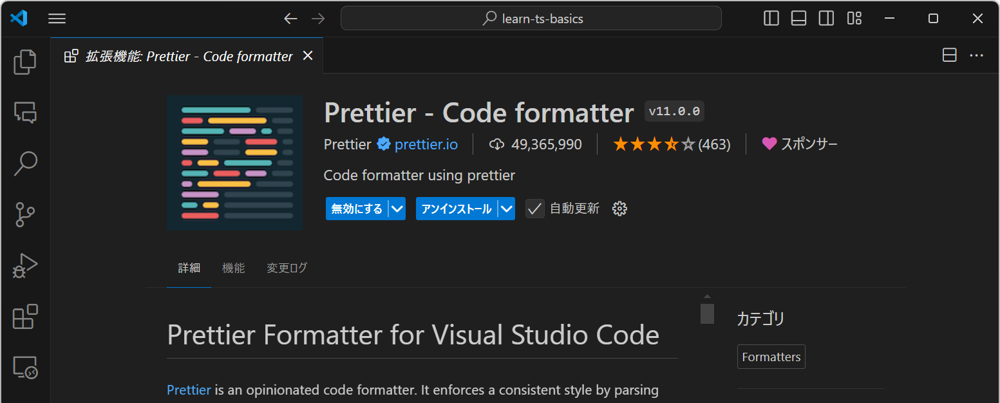
vscode-pets (識別子: tonybaloney.vscode-pets)
は、役に立ちませんがおすすめです。ペットの種類や背景は、VSCodeの設定項目の ここから 変更できます。
{kind=link}
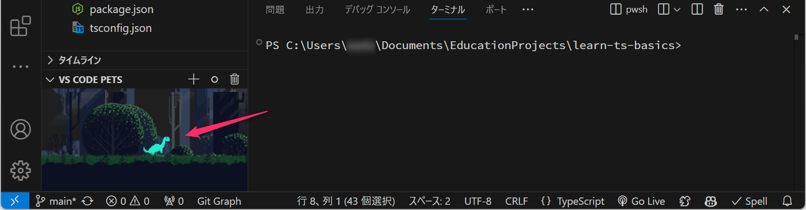
8 モダンTypeScript入門
TypeScript の 開発環境が構築できたので、ここから (本格的には次週の講義から) モダンTypeScript について学んでいきます 。
8.1 コンソールメソッド
コンソールメソッドは console.log("Hello, World!") のように使用するもので
主にデバッグや開発時の情報出力 に利用します。Python の
print 関数、C言語の printf 関数
に相当するものと考えてください。
コンソールメソッドには
console.log()、console.error()、console.warn()、console.info()、console.debug()
などが存在します。これらは、C言語の fprintf(stdout, ...) や
fprintf(stderr, ...) のように使い分けます。
実行環境によっては、ログレベル (log, error, warn…)
に応じて「色分け」や「装飾付き」で出力されたり、フィルタリング機能 (=特定のレベル以上のメッセージのみを表示する機能)
が提供されます。しかし、最初のうちは細かな使い分けは考えずに console.log()
だけの使用 (もしくは console.error() との2つの使い分け) で十分です。
例えば、name と priority
という2つの変数の値を出力したいときは、以下のように カンマ区切り
で記述します (可変長引数としてコンソールメソッドに与えます)。src/prac01.ts
というファイルを新規作成して、コードを記述し、実際に実行して結果を確認してください。
- プログラムの実行は、ターミナルから
npx tsx src/prac01.ts、もしくは[Ctrl]+[Shift]+[B]のショートカットから行なうことができます (基本操作として覚えておいてください)。
// 文字列型 (string type) の変数 name の宣言と初期化
let name: string = "TypeScriptの勉強";
// 数値型 (number type) の変数 priority の宣言と初期化
let priority: number = 3;
console.log(name, priority); // console.log は可変長引数を受け取り可能(すこし分かりづらいですが) 以下のようにスペースで区切られて name と
priority の値が出力されます。
TypeScriptの勉強 38.1.1 演習1 (5分)
src/prac01.ts に、次のような Date型 (日付・日時型) の変数
deadline を追加して、コンソールメソッドで出力してください。
// Date型の変数 deadline の宣言と初期化
// 2025年10月2日 14:15 で初期化したつもり
let deadline: Date = new Date(2025, 10, 2, 14, 15);new Date(...)による初期化において、Month (月) の扱いに注意が必要なこと に気づけたでしょうか？- ゼロオリジンなので
10を与えると「11月」と解釈されます
- ゼロオリジンなので
- コンソールメソッドに Dateオブジェクトを直接渡したとき、出力される時刻フォーマットが ISO 8601形式 となることが確認できたでしょうか。
- 生成AIあるいはウェブ検索を利用して ISO8601形式 について概要を把握してください。
- 今回のNode.jsでは、末尾が
Zの日時が出力されます。Zは UTC (協定世界時) を表します。上記の作り方ではPCのローカル時刻を指定するため、日本時間のPCなら、14:15が05:15と表示されます。月の指定の間違いと、時差による表示の違いを分けて確認してください。
上記の prac01.ts は、次のようなC言語プログラムに相当します。C言語では
型名 変数名 = 初期値; のように変数宣言しましたが、TypeScriptでは 変数名 : 型名 = 初期値; のようにするので注意してください
(順番が逆になることに慣れてください)。
8.2 変数宣言キーワード
TypeScript において、変数宣言のキーワードとしては
let、const、var が使用できます。このうち、var の使用は推奨されていません
(この背景や理由は「ウェブ検索」もしくは「生成AI」で解決してください)。
プロンプト例
モダンTypeScriptでは、変数のキーワードとして
varの使用は推奨されていない、と聞きました。なぜですか。
また、初期化後、書き換えの予定のない変数 (定数) については const
を使用してください。
この科目で扱う範囲のウェブアプリ開発では、9割以上の変数は const
で対応可能です。さきほどの prac01.ts においても name と
priority
は、初期化以降、書き換えられる予定がないので、以下のように記述することが強く推奨されます
(モダンTypeScript
においてコード品質や可読性を高めるためのガイドラインとなっています)。
小テストや課題においても、変更されることがない変数 (定数) については const
で宣言してください。let や var
による冗長な変数宣言は誤答または減点とします。
8.3 テンプレート文字列
TypeScriptにおける「テンプレート文字列」とは、Pythonにおける f文字列
に相当するものです。バッククォートで囲んで「$マーク」と「波括弧」を組み合わせて使用します。
テンプレート文字列の使用例を以下に示します。
const name: string = "TypeScriptの勉強";
const priority: number = 3;
console.log(`Todo 1 => ${name}（優先度:${priority}）`); // テンプレート文字列以下のような出力が得られます。
Todo 1 => TypeScriptの勉強（優先度:3）Pythonとは異なり、$マークをつけなければいけない点に、十分に注意してください。
8.3.1 演習2 (10分)
生成AIあるいはウェブ検索を利用して、
dayjsやmomentなどのライブラリを使わずに、Date型オブジェクトを「2025/10/02 14:15」や「2025年10月02日 14時15分」のような書式で出力する方法について調べて実装してください。また、実行して、結果を確認してください。実装例はこちら。この例は「2025年10月2日 11時45分」を出力するので、上記の指定に合わせて時刻と月・日のゼロ埋めを変更してください。
8.4 オブジェクトのコンソール出力 (1)
ウェブアプリ開発では 複数の変数をオブジェクトにまとめて扱うこと が非常に多いです。ここでのオブジェクトとは、プログラミング1で「オブジェクト指向プログラミング」を学んだときの「オブジェクト」と同じものです。
ただ、TypeScript (特にフロントエンド開発) では クラス は定義・使用せずに オブジェクトを直接記述してプログラムのなかで使うケース が多いです。その場合、メソッドを持たないプロパティ(属性)のみで構成されるオブジェクトになることが多いです (その意味では、C言語の「構造体」に近いと思います)。
さきほどの prac01.ts は、以下のような
オブジェクトリテラル記法 (オブジェクトを直接的に記述する方法)
で、以下のように書き換えることができます。
const todo = {
name: "TypeScriptの勉強", // name = "..." ではない点に要注意
priority: 3, // priority = "..." ではない点に要注意
};
console.log(`Todo 1 => ${todo.name}（優先度:${todo.priority}）`);オブジェクトリテラル記法では = ではなく :
で値を与えること に注意してください
(初心者がよく間違える/混乱するところです)。
また、オブジェクトのプロパティ (属性、フィールド) には、第05行目
のようにドット (.) を使ってアクセスができます。
ここで、const todo としていても、todo.priority = 2; のように
プロパティの値を変更することはできます。const が禁止するのは
todo = ... のように、変数自体へ別の値を再代入すること
です。「const
にしたらオブジェクトの中身もすべて変更できなくなる」と混同しないようにしてください。
8.5 オブジェクトのコンソール出力 (2)
オブジェクト全体を出力したいとき (オブジェクトの内容を確認したいとき) は
console.log(todo); のようにします。例えば、上記の todo
は以下のように出力されます。
{ name: 'TypeScriptの勉強', priority: 3 }ただし、オブジェクトが 多数のプロパティを持つとき や
配列を含むとき、console.log()
にオブジェクトを与えるだけでは非常に見づらくなります。このようなときは
console.log(JSON.stringify(todo, null, 2));
のようにすることで、次のように整形された出力が得られます。
{
"name": "TypeScriptの勉強",
"priority": 3
}ここで、JSON.stringify() は、オブジェクトをJSON文字列 (=JavaScript Object Notation 文字列)
に変換するメソッドです。第1引数にオブジェクトを与え、第2引数に null、第3引数に
2 を与えると、上記のように改行とインデント (スペース2文字で字下げ)
された文字列を得ることができます。
なお、JSON文字列に変換するとプロパティ (例えば name ) が ダブルクォーテーションで囲まれて出力される
など、直接出力した場合と差異があるので注意してください。
8.5.1 定着確認
- 文字列型で「Reactの予習」という値を持った定数
nameを宣言する文を記述せよ。ここでは、型を明示すること。- 答え
const name: string = "Reactの予習"
- 答え
- 数値型で「2」という値を持った定数
priorityを宣言する文を記述せよ。ここでは、型を明示すること。- 答え
const priority: number = 2
- 答え
- 上記の
nameとpriorityを使用してReactの予習（優先度:2）を得るテンプレート文字列を記述せよ。なお、コンソールメソッドで出力する必要はない。- 答え
`${name}（優先度:${priority}）`
- 答え
- 上記の
nameとpriorityと同様の型と値を持ったプロパティを有するtodoというオブジェクトを、オブジェクトリテラル記法で記述せよ。- 答え
const todo = { name: "Reactの予習", priority: 2 };
- 答え
- 上記の
todoオブジェクトを、タブやインデントで整形された JSON に変換してコンソール出力せよ。- 答え
console.log(JSON.stringify(todo, null, 2));
- 答え
- ウェブアプリ開発の文脈で「JSON」とは何の略語か英語で答えよ。
- 答え JavaScript Object Notation
const todo = { name: "Reactの予習", priority: 2 };のあとでtodo.priority = 3;とすると、constへの再代入としてエラーになる。この説明は「適切」か「不適切」か答えよ。 答え: 不適切- 解説: この操作はプロパティの変更です。
todo自体に別のオブジェクトを再代入しているわけではありません。
- 解説: この操作はプロパティの変更です。
9 小さなテスト駆動開発を体験する
ここまでで、TypeScriptのプログラムと自動テストを動かす環境ができました。次は、「どう動いてほしいか」を先にテストで表してから、プログラムを実装することに挑戦します。
これを テスト駆動開発 (TDD: Test-Driven Development) と呼びます。「自動テストを使うこと」と「TDDで開発すること」は同じではありません。実装後にテストを書くこともありますが、今回は 先に期待する動作をテストで示し、その失敗を確認してから実装する順序 を体験します。
基本的には、次のサイクルを小さく繰り返します。
- Red : 期待する動作をテストに書き、まだ実装できていないために 失敗すること を確認する。
- Green : テストが成功するように、必要な実装をする。
- Refactor : テストの成功を保ちながら、コードの読みやすさなどを改善する。
完成コードを先に貼り付けず、各段階で予測・実行・確認してから先へ進んでください。目標時間は 35〜45分 です。途中で調べたり、寄り道したりしても構いません。
9.1 まず、期待する動作を決める
Todoアプリの「優先度」を判定する、小さな関数を作ります。今回は次の仕様にします。
- 関数名は
isValidPriority。number型の値を1個受け取る。 - 優先度として有効なのは 1〜3の整数。有効なら
true、それ以外ならfalseを返す。 - 不適切な値を、勝手に丸めたり範囲内に直したりしない。
例えば、2 は「有効」と判断します。一方で
0、4、1.5
は「無効」と判断します。コードを書く前に、まずは、自分で、それぞれについて期待する結果
(ここでは有効/無効) を考えてください。
ここで「範囲外なら false を返す」というのは、自分で決めた
設計上の判断
であることに注意してください。現場では、値を補正する、例外を投げる、といった設計もあり得ますが、この関数では判定結果を返すものとします。画面にエラーメッセージを出す処理などは、呼び出す側の役割として分けておきます。
9.2 関数とテストを別のファイルに置く
ts-playground の src に、次の 2つのファイル
を作成してください。既存の prac00.test.ts は、そのまま残して構いません。
ts-playground/
└─ src/
├─ priority.ts ← 判定する関数
└─ priority.test.ts ← その関数のテストまず priority.ts
に、関数の名前・引数・戻り値だけを用意します。中身はまだ未完成で、何を渡しても
false を返します。
value: number: 数値を1個受け取る。): boolean: 戻り値の型は 真偽値 (trueまたはfalse)。export: この関数を、別のファイルから利用できるようにする。
PythonやC言語で学んだ「引数を受け取って、値を返す関数」と同じ考え方です。TypeScriptの関数の詳しい書き方は、今後の講義でも扱います。
次に、「2を渡すとtrueになる」 というテストを priority.test.ts
に書きます。
import { expect, test } from "vitest";
import { isValidPriority } from "./priority.js";
test("優先度2は有効", () => {
expect(isValidPriority(2)).toBe(true);
});import
は別のファイルやパッケージから機能を読み込む文です。ここでは、Vitestの機能と、自分で定義した関数を読み込んでいます。
priority.ts を作ったのに、importでは priority.js？
今回の NodeNext
の設定では、JSへ変換した後にNode.jsが読み込むファイル名に合わせて、相対importに
.js を書きます。TypeScriptは型チェック時に対応する
priority.ts を参照でき、Vitestでもこの構成でテストできます。src に
priority.js を手作業で作る必要はありません。
test("名前", () => { ... }) の () => { ... }
は、テスト実行時に行なう処理を、関数として渡す書き方です。今回は、この内側に確認したい処理を書きます。
9.3 Red：意図した理由で失敗することを確認
VSCodeのテストビューから priority.test.ts
のテストを実行してください。ターミナルでは、プロジェクトのルートで次を実行できます。
npm run test:run -- src/priority.test.ts--
より後ろは、npmからテストツールに渡す引数です。ここでは、今回のファイルだけを対象にします。テストは
Ctrl+Shift+B やtsxではなく、Vitestで実行してください。
結果は 1件失敗 となり、期待値 (Expected) が
true、実際の値 (Received) が false
と表示されるはずです。
これは、テストが動作し、未完成の関数が仕様を満たしていないことを検出できたという状態です。「ファイルが見つからない」「構文エラーで起動できない」は、ここで確認したい失敗とは異なります。失敗したという表示だけで満足せず、失敗の理由を読んでください。
9.4 Green：まず1件を成功させる
priority.ts を次のように変更して保存し、同じテストを再実行してください。
1件成功 になりました。ただし、この実装が「1〜3の整数だけを有効とする」という仕様を満たしていないことは分かりますね🤔
ここでは、テストを小さく始めるために、意図的に単純な実装にしています。テストが成功しても、まだテストしていない条件については何も確認できていません。
9.4.1 定着確認
- 「2を渡すとtrueになる」というテストが成功した。この結果から、0や4を渡した場合の動作も正しいと判断できる。この説明は適切か、不適切か。
- 答え: 不適切
- 解説: 確認したのは2に対する結果だけ。常にtrueを返す関数でも、そのテストは成功する。
9.5 境界と、その外側をテストする
有効範囲の端に当たる 1 と 3、その外側の 0 と
4
についても確認します。このように、条件が切り替わる境目を意識して調べることが重要です。
今あるテストを消さずに、priority.test.ts
の末尾へ次を追加してください。
test("下限の1は有効", () => {
expect(isValidPriority(1)).toBe(true);
});
test("上限の3は有効", () => {
expect(isValidPriority(3)).toBe(true);
});
test("下限より小さい0は無効", () => {
expect(isValidPriority(0)).toBe(false);
});
test("上限より大きい4は無効", () => {
expect(isValidPriority(4)).toBe(false);
});現在の実装で、どのテストが失敗するかを予測してから実行してください。3件成功・2件失敗 になるはずです。
次に、関数を 1以上かつ3以下の場合にtrueを返す
ように変更してみてください。&& はC言語と同じ「かつ」で、Pythonの
and に相当します。
取り組んでから、次の実装例と比較してください。
これで 5件成功 になります。ここで、仕様をもう一度読み直してください。まだ確認していない条件はありませんか？
9.6 数値型なら、適切な入力なのか？
仕様は「1〜3の 整数」でした。number 型では、1.5
のような小数も扱えます。したがって 型チェックに通ることと、用途に適した値であること
は同じではありません。
まず、実装には触れずに次のテストを追加してください。
実行して、5件成功・1件失敗 となることを確認してください。失敗を確認したら、整数かどうかも調べるように関数を変更します。
整数の判定には Number.isInteger(value) が使えます。整数なら
true、そうでなければ false を返します。例えば
Number.isInteger(2) は true、Number.isInteger(1.5) は
false です。
export function isValidPriority(value: number): boolean {
if (!Number.isInteger(value)) {
return false;
}
return value >= 1 && value <= 3;
}! はC言語と同じ否定で、Pythonの not
に相当します。整数でなければ先に false
を返し、整数の場合に範囲を判定しています。保存して再実行し、6件成功
に戻ることを確認してください。
9.7 Refactor：動作を保ってコードを整理する
今の関数は、次のように「整数である」「1以上」「3以下」という条件をまとめることもできます。
export function isValidPriority(value: number): boolean {
return Number.isInteger(value) && value >= 1 && value <= 3;
}この変更では 仕様も、テストの期待値も変えません。保存後、6件が引き続き成功することを確認してください。確認済みの動作を壊していないか、すぐに調べられるのが自動テストの利点です。なお、行数が短ければ必ず良いというわけではなく、読みやすさも判断してください。
最後に、次を実行します。
npm run typecheck
npm run build
npm run test:runprac00.test.ts を残しており、他にテストを追加していなければ、最後の結果は
2ファイル・7件成功
になります。VSCodeの「問題」パネルにもエラーが残っていないことを確認してください。
9.8 演習3：テストが見逃す条件を考える (目標時間: 5分)
関数の value <= 3 を、一時的に value < 3
に変えたら、どのテストが失敗するでしょうか。予想を書いてから、実際に変更・保存・実行して確かめてください。確認後は元に戻し、すべて成功することを確認します。
もしテストが 2 と 1.5
の2つしかなかったら、この間違いに気づけるでしょうか。テストの数だけでなく、どんな条件を選んだかが重要だと説明できるようになってください。
余裕があれば、負の数や別の小数など、自分で入力を選んでテストを追加してください。期待値を決めた理由も説明してください。
9.9 AIのコードを評価するときにも使う
AIが return value >= 1 && value <= 3;
というコードを提案したとします。ぱっと見では正しそうでも、「整数」という条件が抜けています。人間が仕様を読み、見落としそうな条件を選んで検証することが大切です。
AIに相談するときも、先に「入力」「期待する結果」「その理由」を自分で考えてください。例えば、次のように使えます。
優先度として1〜3の整数だけを受け付ける関数を作っています。私が考えたテスト入力と期待値は以下のとおりです。見落としている条件があれば、完成コードを出さずに質問してください。
失敗したときは、実装の誤りだけでなく テストの期待値や仕様の解釈が誤っていないか も調べます。ただ緑色の成功表示にするために期待値を変更するのではなく、仕様に立ち戻って判断してください。
今回扱ったのは、number
型の値を受け取る小さな関数です。ユーザー入力や外部データでは、文字列や未入力なども考慮が必要になります。外部から来た値が、型注釈を書くだけで自動検証されるわけではありません。そのような入力の検証や、通信・保存の失敗時の振る舞いは、今後の開発で段階的に扱います。
9.9.1 定着確認
- TDDでは、これから実装する動作のテストを先に書き、意図した理由で失敗することを確認する。この説明は適切か、不適切か。
- 答え: 適切
- この関数に
number型を指定しても、1.5が渡されることを型チェックだけでは防げない。その理由を答えよ。- 答え: number型は整数だけでなく、小数も扱うため。
- 優先度の下限と上限、およびそれぞれのすぐ外側として、今回使った整数を答えよ。
- 答え: 下限1・上限3、範囲外の0・4。
value <= 3をvalue < 3に誤って変更した場合、今回のどの入力のテストが失敗するか。- 答え: 3を入力する「上限の3は有効」のテスト。
- Refactorの段階では、実装に合わせてテストの期待値も変更する。この説明は適切か、不適切か。
- 答え: 不適切
- 解説: 期待する動作は維持し、コードの構造などを改善する。今回の整理では期待値を変えない。
- 不適切な優先度を渡した場合に、今回の関数はプログラムを停止させるか、それとも何かを返すか。
- 答え: falseを返す。停止させたり、値を補正したりはしない設計。
- AIが実装とテストの両方を作り、そのテストが全て成功すれば、仕様の見落としはないと判断できる。この説明は適切か、不適切か。
- 答え: 不適切
- 解説: 実装とテストの両方が同じ条件を見落としている可能性がある。仕様と照合し、確認する条件や期待値を評価する必要がある。
- 参考: Vitestのtest、Number.isInteger
10 授業時間外学習
- 本科目は「学修単位科目」です。今回の講義内容 +アルファ に関して
4時間相当の授業時間外学習
に取り組んでください。疑問点や不明点などを「生成AI」で調べて深掘りしたり、C言語やPythonプログラムを
TypeScript に移植したりすることをお勧めします。
- 何を学べばよいか分からない人はモダンTypeScript入門 などのキーワードで「ウェブ検索」や「YouTube検索」して、それを勉強してください。
- 参考: サバイバルTypeScript TypeScript の入門ページです。
- 次回の授業のはじめに「小テスト」を実施します。主に「定着確認」から出題します。筆記用具を持参してください。